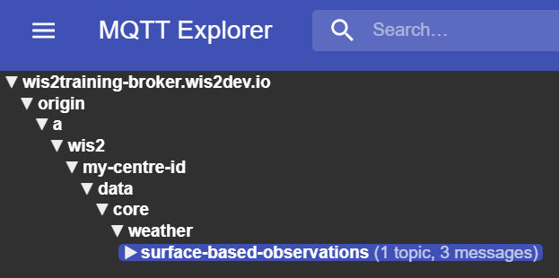
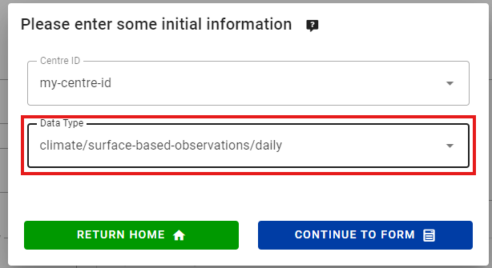

WIS2 in a box 培训
WIS2 in a box (wis2box) 是世界气象组织(WMO) WIS2节点的一个自由和开源(FOSS)参考实现。该项目提供了一个即插即用的工具集，用于使用基于标准的方法摄取、处理和发布天气/气候/水数据，符合WIS2原则。wis2box还提供对WIS2网络中所有数据的访问。wis2box旨在为数据提供者降低进入门槛，提供数据发现、访问和可视化的基础设施和服务。
本培训提供了关于wis2box项目各个方面的逐步解释以及多个练习，帮助您发布和下载WIS2的数据。培训以概述演示和实践练习的形式提供。
参与者将能够使用示例测试数据和元数据，以及整合他们自己的数据和元数据。
本培训涵盖了广泛的主题（安装/设置/配置、发布/下载数据等）。
目标和学习成果
本培训的目标是熟悉以下内容：
- WIS2架构的核心概念和组件
- WIS2中用于发现和访问的数据和元数据格式
- wis2box架构和环境
- wis2box的核心功能：
- 元数据管理
- 数据摄取和转换为BUFR格式
- MQTT代理用于WIS2消息发布
- HTTP端点用于数据下载
- API端点用于程序化访问数据
导航
左侧导航提供了整个培训的目录。
右侧导航提供了特定页面的目录。
先决条件
知识
- 基本的Linux命令（见备忘单）
- 网络和互联网协议的基本知识
软件
本培训需要以下工具：
- 运行Ubuntu OS的实例（在本地培训会议期间由WMO培训师提供），见访问您的学生VM
- SSH客户端访问您的实例
- 在您的本地机器上的MQTT Explorer
- SCP和FTP客户端从您的本地机器复制文件
约定
Question
这样标记的部分邀请您回答一个问题。
您还会注意到文本中有提示和注释部分：
Tip
提示分享如何最好地完成任务。
Note
注释提供了关于实践课程所涵盖主题的额外信息，以及如何最好地完成任务。
示例如下所示：
配置
1 2 3 4 | |
需要在终端/控制台上输入的代码片段表示为：
echo 'Hello world'
运行中的容器名称（运行的镜像）用粗体表示。
培训地点和材料
培训内容、wiki和问题跟踪器在GitHub上管理，网址为https://github.com/wmo-im/wis2box-training。
打印材料
这个培训可以导出为PDF。要保存或打印这个培训材料，请转到打印页面，然后选择 文件 > 打印 > 保存为PDF。
练习材料
练习材料可以从exercise-materials.zip压缩文件下载。
支持
对于问题/错误/建议或对本培训的改进/贡献，请使用GitHub问题跟踪器。
所有wis2box的错误、增强和问题可以在GitHub上报告。
如需额外支持或有问题，请联系 wis2-support@wmo.int。
如常，wis2box的核心文档始终可以在https://docs.wis2box.wis.wmo.int找到。
欢迎并鼓励贡献！
实践课程
通过 MQTT 连接到 WIS2
学习成果
通过本实践课程，您将能够：
- 使用 MQTT Explorer 连接到 WIS2 全球代理
- 查看 WIS2 主题结构
- 查看 WIS2 通知消息结构
引言
WIS2 使用 MQTT 协议来宣传天气/气候/水数据的可用性。WIS2 全球代理订阅网络中所有 WIS2 节点的消息，并重新发布它接收到的消息。全球缓存订阅全球代理，下载消息中的数据，然后在 cache 主题上用新的 URL 重新发布消息。全球发现目录从代理发布发现元数据并提供搜索 API。
这是一个在主题 origin/a/wis2/br-inmet/data/core/weather/surface-based-observations/synop 上接收到的 WIS2 通知消息结构的示例：
{
"id": "59f9b013-c4b3-410a-a52d-fff18f3f1b47",
"type": "Feature",
"version": "v04",
"geometry": {
"coordinates": [
-38.69389,
-17.96472,
60
],
"type": "Point"
},
"properties": {
"data_id": "br-inmet/data/core/weather/surface-based-observations/synop/WIGOS_0-76-2-2900801000W83499_20240815T060000",
"datetime": "2024-08-15T06:00:00Z",
"pubtime": "2024-08-15T09:52:02Z",
"integrity": {
"method": "sha512",
"value": "TBuWycx/G0lIiTo47eFPBViGutxcIyk7eikppAKPc4aHgOmTIS5Wb9+0v3awMOyCgwpFhTruRRCVReMQMp5kYw=="
},
"content": {
"encoding": "base64",
"value": "QlVGUgAA+gQAABYAACsAAAAAAAIAHAAH6AgPBgAAAAALAAABgMGWx1AAAM0ABOIAAAODM0OTkAAAAAAAAAAAAAAKb5oKEpJ6YkJ6mAAAAAAAAAAAAAAAAv0QeYA29WQa87ZhH4CQP//z+P//BD////+ASznXuUb///8MgAS3/////8X///e+AP////AB/+R/yf////////////////////6/1/79H/3///gEt////////4BLP6QAf/+/pAB//4H0YJ/YeAh/f2///7TH/////9+j//f///////////////////v0f//////////////////////wNzc3Nw==",
"size": 250
},
"wigos_station_identifier": "0-76-2-2900801000W83499"
},
"links": [
{
"rel": "canonical",
"type": "application/bufr",
"href": "http://wis2bra.inmet.gov.br/data/2024-08-15/wis/br-inmet/data/core/weather/surface-based-observations/synop/WIGOS_0-76-2-2900801000W83499_20240815T060000.bufr4",
"length": 250
}
]
}
在本实践课程中，您将学习如何使用 MQTT Explorer 工具设置 MQTT 客户端连接到 WIS2 全球代理，并能够显示 WIS2 通知消息。
MQTT Explorer 是一个有用的工具，用于浏览和查看给定 MQTT 代理的主题结构以及正在发布的数据。
请注意，MQTT 主要用于“机器对机器”的通信；这意味着通常会有一个客户端自动解析接收到的消息。要以编程方式使用 MQTT（例如，在 Python 中），您可以使用 MQTT 客户端库，如 paho-mqtt，连接到 MQTT 代理并处理传入消息。根据您的需求和技术环境，存在许多 MQTT 客户端和服务器软件。
使用 MQTT Explorer 连接到全球代理
要查看由 WIS2 全球代理发布的消息，您可以使用“MQTT Explorer”，该工具可以从 MQTT Explorer 网站下载。
打开 MQTT Explorer 并使用以下详细信息添加新连接到由 MeteoFrance 托管的全球代理：
- 主机：globalbroker.meteo.fr
- 端口：8883
- 用户名：everyone
- 密码：everyone

点击 'ADVANCED' 按钮，删除预配置的主题并添加以下主题进行订阅：
origin/a/wis2/#

Note
设置 MQTT 订阅时，您可以使用以下通配符：
- 单级 (+)：单级通配符替换一个主题级别
- 多级 (#)：多级通配符替换多个主题级别
在这种情况下，origin/a/wis2/# 将订阅 origin/a/wis2 主题下的所有主题。
点击 'BACK'，然后 'SAVE' 保存您的连接和订阅详情。然后点击 'CONNECT'：
消息应该开始在您的 MQTT Explorer 会话中出现，如下所示：

现在您已经准备好开始探索 WIS2 的主题和消息结构。
练习 1：查看 WIS2 主题结构
使用 MQTT 浏览 origin 主题下的主题结构。
Question
我们如何区分发布数据的 WIS 中心？
点击以显示答案
您可以点击 MQTT Explorer 中左侧窗口以展开主题结构。
我们可以通过查看主题结构的第四级来区分发布数据的 WIS 中心。例如，以下主题：
origin/a/wis2/br-inmet/data/core/weather/surface-based-observations/synop
告诉我们数据是由巴西国家气象学院 - INMET 发布的，中心 ID 为 br-inmet。
Question
我们如何区分由托管 GTS 到 WIS2 网关的 WIS 中心发布的消息和由托管 WIS2 节点的 WIS 中心发布的消息？
点击以显示答案
我们可以通过查看主题结构中的中心 ID 来区分来自 GTS 到 WIS2 网关的消息。例如，以下主题：
origin/a/wis2/de-dwd-gts-to-wis2/data/core/I/S/A/I/01/sbbr
告诉我们数据是由德国气象局 (DWD) 托管的 GTS 到 WIS2 网关发布的。GTS 到 WIS2 网关是一种特殊类型的数据发布者，它将全球电信系统 (GTS) 的数据发布到 WIS2。主题结构由 GTS 消息的 TTAAii CCCC 头组成。
练习 2：查看 WIS2 消息结构
从 MQTT Explorer 断开连接并更新 'Advanced' 部分以更改订阅为以下内容：
origin/a/wis2/+/data/core/weather/surface-based-observations/synopcache/a/wis2/+/data/core/weather/surface-based-observations/synop

Note
+ 通配符用于订阅所有 WIS 中心。
重新连接到全球代理并等待消息出现。
您可以在右侧的“Value”部分查看 WIS2 消息的内容。尝试展开主题结构以查看消息的不同级别，直到您到达最后一级并查看其中一条消息的消息内容。
Question
我们如何识别数据发布的时间戳？我们又如何识别数据收集的时间戳？
点击以显示答案
数据发布的时间戳包含在消息的 properties 部分，键为 pubtime。
数据收集的时间戳包含在消息的 properties 部分，键为 datetime。

Question
我们如何从消息中提供的 URL 下载数据？
点击以显示答案
URL 包含在 links 部分，rel="canonical" 并由 href 键定义。
您可以复制 URL 并将其粘贴到网络浏览器中以下载数据。
练习 3：查看 'origin' 和 'cache' 主题之间的区别
确保您仍然使用在练习 2 中描述的主题订阅 origin/a/wis2/+/data/core/weather/surface-based-observations/synop 和 cache/a/wis2/+/data/core/weather/surface-based-observations/synop 连接到全球代理。
尝试识别在 origin 和 cache 主题上发布的同一中心 ID 的消息。
Question
发布在 origin 和 cache 主题上的消息有什么区别？
点击以显示答案
发布在 origin 主题上的消息是全球代理从 WIS2 节点网络中重新发布的原始消息。
发布在 cache 主题上的消息是全球缓存下载的数据的消息。如果您检查以 cache 开头的主题的消息内容，您会看到 'canonical' 链接已更新为新的 URL。
WIS2 网络中有多个全球缓存，因此您将收到每个下载了该消息的全球缓存的一条消息。
全球缓存只会下载并重新发布在 ../data/core/... 主题层次结构上发布的消息。
结论
恭喜！
在这个实践课程中，您学到了：
- 如何使用 MQTT Explorer 订阅 WIS2 全球代理服务
- WIS2 主题结构
- WIS2 通知消息结构
- 核心数据和推荐数据的区别
- GTS 到 WIS2 网关使用的主题结构
- 全球代理在
origin和cache主题上发布的消息的区别
访问您的学生虚拟机
学习成果
通过本实践课程，您将能够：
- 通过 SSH 和 WinSCP 访问您的学生虚拟机
- 验证实践练习所需软件是否已安装
- 确认您可以在本地学生虚拟机上访问本次培训的练习材料
引言
作为本地运行的 wis2box 培训课程的一部分，您可以在名为“WIS2-training”的本地培训网络上访问您的个人学生虚拟机。
您的学生虚拟机已预装以下软件：
- Ubuntu 22.0.4.3 LTS ubuntu-22.04.3-live-server-amd64.iso
- Python 3.10.12
- Docker 24.0.6
- Docker Compose 2.21.0
- 文本编辑器：vim, nano
Note
如果您想在本地培训课程之外进行此培训，您可以使用任何云服务提供商提供自己的实例，例如：
- GCP（谷歌云平台）VM 实例
e2-medium - AWS（亚马逊网络服务）ec2 实例
t3a.medium - Azure（微软）Azure 虚拟机
standard_b2s
选择 Ubuntu Server 22.0.4 LTS 作为操作系统。
创建您的虚拟机后，请确保已安装 python、docker 和 docker compose，如 wis2box-software-dependencies 所述。
本次培训中使用的 wis2box 发布档案可以通过以下方式下载：
wget https://github.com/wmo-im/wis2box/releases/download/1.0.0rc1/wis2box-setup-1.0.0rc1.zip
unzip wis2box-setup-1.0.0rc1.zip
您可以在 https://github.com/wmo-im/wis2box/releases 找到最新的 'wis2box-setup' 档案。
本次培训使用的练习材料可以通过以下方式下载：
wget https://training.wis2box.wis.wmo.int/exercise-materials.zip
unzip exercise-materials.zip
运行练习材料需要以下额外的 Python 包：
pip3 install minio
如果您在本地 WIS2 培训课程中使用提供的学生虚拟机，所需软件将已经安装。
在本地培训网络上连接到您的学生虚拟机
按照培训师提供的指示，将您的 PC 连接到 WIS2 培训期间在教室内广播的本地 Wi-Fi。
使用 SSH 客户端使用以下信息连接到您的学生虚拟机：
- 主机：（在面对面培训中提供）
- 端口：22
- 用户名：（在面对面培训中提供）
- 密码：（在面对面培训中提供）
Tip
如果您不确定主机名/用户名或连接有问题，请联系培训师。
连接后，请更改您的密码以确保其他人无法访问您的虚拟机：
limper@student-vm:~$ passwd
更改 testuser 的密码。
当前密码：
新密码：
重新输入新密码：
passwd: 密码更新成功
验证软件版本
为了能够运行 wis2box，学生虚拟机应预装 Python、Docker 和 Docker Compose。
检查 Python 版本：
python3 --version
Python 3.10.12
检查 Docker 版本：
docker --version
Docker version 24.0.6, build ed223bc
检查 Docker Compose 版本：
docker compose version
Docker Compose version v2.21.0
为确保您的用户可以运行 Docker 命令，您的用户已被添加到 docker 组。
测试您的用户是否可以运行 docker hello-world，运行以下命令：
docker run hello-world
这应该会拉取 hello-world 镜像并运行一个打印消息的容器。
检查您的输出中是否显示以下内容：
...
Hello from Docker!
This message shows that your installation appears to be working correctly.
...
检查练习材料
检查您的主目录内容；这些是作为培训和实践课程的一部分使用的材料。
ls ~/
exercise-materials wis2box-1.0.0rc1
如果您的本地 PC 上安装了 WinSCP，您可以使用它连接到您的学生虚拟机，并检查您的主目录内容以及在您的虚拟机和本地 PC 之间下载或上传文件。
WinSCP 不是培训所必需的，但如果您想在本地 PC 上使用文本编辑器编辑虚拟机上的文件，它可能会很有用。
以下是使用 WinSCP 连接到您的学生虚拟机的方法：
打开 WinSCP 并点击“新站点”。您可以如下创建一个新的 SCP 连接到您的虚拟机：

点击“保存”然后“登录”以连接到您的虚拟机。
您应该能够看到以下内容：

结论
恭喜！
在这个实践课程中，您学会了：
- 通过 SSH 和 WinSCP 访问您的学生虚拟机
- 验证实践练习所需软件是否已安装
- 确认您可以在本地学生虚拟机上访问本次培训的练习材料
初始化 wis2box
学习成果
在本实践课程结束时，您将能够：
- 运行
wis2box-create-config.py脚本创建初始配置 - 启动 wis2box 并检查其组件的状态
- 在浏览器中访问 wis2box-webapp、API、MinIO UI 和 Grafana 仪表板
- 使用 MQTT Explorer 连接到本地的 wis2box-broker
Note
当前的培训材料使用的是 wis2box-1.0.0rc1。
如果您在本地培训课程之外运行此培训，请参阅 accessing-your-student-vm 了解如何下载和安装 wis2box 软件堆栈的指南。
准备工作
使用您的用户名和密码登录到指定的 VM，并确保您位于 wis2box-1.0.0rc1 目录中：
cd ~/wis2box-1.0.0rc1
创建初始配置
wis2box 的初始配置需要：
- 一个包含配置参数的环境文件
wis2box.env - 由环境变量
WIS2BOX_HOST_DATADIR定义的主机上的目录，用于主机和 wis2box 容器之间的共享
可以使用 wis2box-create-config.py 脚本来创建您的 wis2box 的初始配置。
它将询问您一系列问题以帮助设置您的配置。
脚本完成后，您将能够查看和更新配置文件。
按以下方式运行脚本：
python3 wis2box-create-config.py
wis2box-host-data 目录
脚本将要求您输入用于 WIS2BOX_HOST_DATADIR 环境变量的目录。
请注意，您需要定义此目录的完整路径。
例如，如果您的用户名是 username，则目录的完整路径为 /home/username/wis2box-data：
username@student-vm-username:~/wis2box-1.0.0rc1$ python3 wis2box-create-config.py
请输入用于 WIS2BOX_HOST_DATADIR 的目录：
/home/username/wis2box-data
将设置用于 WIS2BOX_HOST_DATADIR 的目录为：
/home/username/wis2box-data
这是正确的吗？(y/n/exit)
y
已创建目录 /home/username/wis2box-data。
wis2box URL
接下来，您将被要求输入您的 wis2box 的 URL。这是用于访问 wis2box 网络应用程序、API 和 UI 的 URL。
请使用 http://<your-hostname-or-ip> 作为 URL。
请输入 wis2box 的 URL：
对于本地测试，URL 是 http://localhost
若要启用远程访问，URL 应指向托管 wis2box 的服务器的公共 IP 地址或域名。
http://username.wis2.training
将设置 wis2box 的 URL 为：
http://username.wis2.training
这是正确的吗？(y/n/exit)
WEBAPP、STORAGE 和 BROKER 密码
在提示输入 WIS2BOX_WEBAPP_PASSWORD、WIS2BOX_STORAGE_PASSWORD、WIS2BOX_BROKER_PASSWORD 时，您可以选择生成随机密码，并定义您自己的密码。
不用担心记住这些密码，它们将被存储在您的 wis2box-1.0.0rc1 目录中的 wis2box.env 文件中。
查看 wis2box.env
脚本完成后检查当前目录中 wis2box.env 文件的内容：
cat ~/wis2box-1.0.0rc1/wis2box.env
或通过 WinSCP 检查文件的内容。
Question
wis2box.env 文件中 WISBOX_BASEMAP_URL 的值是什么？
点击以显示答案
WIS2BOX_BASEMAP_URL 的默认值是 https://{s}.tile.openstreetmap.org/{z}/{x}/{y}.png。
此 URL 指向 OpenStreetMap 瓦片服务器。如果您想使用不同的地图提供商，可以将此 URL 更改为指向不同的瓦片服务器。
Question
wis2box.env 文件中 WIS2BOX_STORAGE_DATA_RETENTION_DAYS 环境变量的值是多少？
点击以显示答案
WIS2BOX_STORAGE_DATA_RETENTION_DAYS 的默认值是 30 天。如果您愿意，可以将此值更改为不同的天数。
wis2box-management 容器每天运行一次 cronjob，从 wis2box-public 存储桶和 API 后端删除超过 WIS2BOX_STORAGE_DATA_RETENTION_DAYS 定义的天数的数据：
0 0 * * * su wis2box -c "wis2box data clean --days=$WIS2BOX_STORAGE_DATA_RETENTION_DAYS"
Note
wis2box.env 文件包含定义您的 wis2box 配置的环境变量。有关更多信息，请参阅 wis2box-documentation。
除非您确定要进行的更改，请不要编辑 wis2box.env 文件。不正确的更改可能导致您的 wis2box 停止工作。
不要与任何人分享您的 wis2box.env 文件的内容，因为它包含敏感信息，如密码。
在 wis2box 中配置数据集
学习成果
在本实践课程结束时，您将能够：
- 创建一个新的数据集
- 为数据集创建发现元数据
- 配置数据集的数据映射
- 发布带有 WCMP2 记录的 WIS2 通知
- 更新并重新发布您的数据集
引言
wis2box 使用与发现元数据和数据映射相关联的数据集。
发现元数据用于创建 WCMP2（世界气象组织核心元数据配置文件 2）记录，该记录通过在您的 wis2box-broker 上发布的 WIS2 通知共享。
数据映射用于将数据插件关联到您的输入数据，允许您的数据在使用 WIS2 通知发布之前进行转换。
本课程将指导您创建新的数据集、创建发现元数据和配置数据映射。您将在 wis2box-api 中检查您的数据集，并审查您的发现元数据的 WIS2 通知。
准备
使用 MQTT Explorer 连接到您的 broker。
使用公共凭证 everyone/everyone 而不是使用您的内部 broker 凭证：

Note
您永远不需要与外部用户共享您的内部 broker 的凭证。'everyone' 用户是一个公共用户，用于启用 WIS2 通知的共享。
everyone/everyone 凭证在主题 'origin/a/wis2/#' 上具有只读访问权限。这是发布 WIS2 通知的主题。全球 Broker 可以使用这些公共凭证订阅以接收通知。
'everyone' 用户将无法看到内部主题或能够发布消息。
打开浏览器并打开页面 http://<your-host>/wis2box-webapp。确保您已登录并可以访问 '数据集编辑器' 页面。
如果您需要记住如何连接到 broker 或访问 wis2box-webapp，请参阅初始化 wis2box部分。
为 processes/wis2box 创建授权令牌
您将需要 'processes/wis2box' 端点的授权令牌来发布您的数据集。
要创建授权令牌，请通过 SSH 访问您的培训 VM，并使用以下命令登录到 wis2box-management 容器：
cd ~/wis2box-1.0.0rc1
python3 wis2box-ctl.py login
然后运行以下命令为 'processes/wis2box' 端点创建一个随机生成的授权令牌：
wis2box auth add-token --path processes/wis2box
您也可以通过将令牌作为参数提供给命令，创建一个具有特定值的令牌：
wis2box auth add-token --path processes/wis2box MyS3cretToken
确保复制令牌值并将其存储在您的本地机器上，因为您稍后将需要它。
获取您的令牌后，您可以退出 wis2box-management 容器：
exit
在 wis2box-webapp 中创建新的数据集
通过转到 http://<your-host>/wis2box-webapp 并从左侧菜单中选择 '数据集编辑器'，导航到您的 wis2box 实例的 '数据集编辑器' 页面。
在 '数据集编辑器' 页面的 '数据集' 选项卡下，点击 "创建新的 ..."：

将出现一个弹出窗口，要求您提供：
- 中心 ID：这是由 WMO 成员指定的、用于标识负责发布数据的数据中心的机构缩写（小写且无空格）。
- 数据类型：您正在为其创建元数据的数据类型。您可以选择使用预定义的模板或选择 '其他'。如果选择 '其他'，则必须手动填写更多字段。
中心 ID
您的中心 ID 应以您国家的顶级域名开头，后跟一个缩写的组织名称（例如 fr-meteofrance）。中心 ID 必须使用小写字母并且只能使用字母数字字符。下拉列表显示了 WIS2 上当前注册的所有中心 ID 以及您在 wis2box 中已创建的任何中心 ID。
数据类型模板
数据类型 字段允许您从 wis2box-webapp 数据集编辑器中可用的模板列表中选择。模板将使用适用于数据类型的建议默认值预填充表单。这包括元数据的建议标题和关键字以及预配置的数据插件。主题将固定为数据类型的默认主题。
为了培训的目的，我们将使用 weather/surface-based-observations/synop 数据类型，该数据类型包括确保数据转换为 BUFR 格式的数据插件。
如果您想使用 wis2box 发布 CAP 警报，请使用模板 weather/advisories-warnings。此模板包含一个数据插件，用于验证输入数据是否为有效的 CAP 警报，然后发布。要创建 CAP 警报并通过 wis2box 发布，您可以使用 CAP Composer。
请选择适合您组织的中心 ID。
对于数据类型，请选择weather/surface-based-observations/synop：

点击 继续填写表单 以继续，现在您将看到 数据集编辑器表单。
由于您选择了 weather/surface-based-observations/synop 数据类型，表单将预填充一些与此数据类型相关的初始值。
创建发现元数据
数据集编辑器表单允许您为您的数据集提供发现元数据，wis2box-management 容器将使用这些元数据发布 WCMP2 记录。
由于您选择了 'weather/surface-based-observations/synop' 数据类型，表单将预填充一些默认值。
请确保将自动生成的 '本地 ID' 替换为描述性名称，例如 'synop-dataset-wis2training'：

审查标题和关键字，并根据需要进行更新，并为您的数据集提供描述。
注意有选项可以将 'WMO 数据政策' 从 '核心' 更改为 '推荐' 或修改您的默认元数据标识符，请将数据政策保持为 '核心' 并使用默认元数据标识符。
接下来，审查定义您的 '时间属性' 和 '空间属性' 的部分。您可以通过更新 '北纬'、'南纬'、'东经' 和 '西经' 字段来调整边界框：

接下来，填写定义 '数据提供者的联系信息' 的部分：

最后，填写定义 '数据质量信息' 的部分：
填写完所有部分后，点击 '验证表单' 并检查表单是否有任何错误：

如果有任何错误，请更正它们并再次点击 '验证表单'。
确保您没有错误，并且您得到一个弹出提示，表明您的表单已通过验证：

接下来，在提交您的数据集之前，审查您的数据集的数据映射。
配置数据映射
由于您使用模板创建了数据集，因此数据集映射已使用 'weather/surface-based-observations/synop' 数据类型的默认插件预填充。数据插件用于在使用 WIS2 通知发布之前转换 wis2box 中的数据。

请注意，您可以点击“更新”按钮更改插件的设置，例如文件扩展名和文件模式，现在您可以保留默认设置。在后续课程中，您将了解更多关于 BUFR 和数据转换为 BUFR 格式的信息。
提交您的数据集
最后，您可以点击 '提交' 来发布您的数据集。
您需要提供您之前创建的 'processes/wis2box' 的授权令牌。如果您尚未这样做，可以按照准备部分中的说明创建新令牌。
提交您的数据集后，检查您是否收到以下消息，表明数据集已成功提交：

点击 '确定' 后，您将被重定向到数据集编辑器主页。现在如果您点击 '数据集' 选项卡，您应该会看到您的新数据集列出：

审查您的发现元数据的 WIS2 通知
转到 MQTT Explorer，如果您已连接到 broker，您应该会看到在主题 origin/a/wis2/<your-centre-id>/metadata 上发布的新 WIS2 通知：

检查您发布的 WIS2 通知的内容。您应该会看到一个与 WIS 通知消息 (WNM) 格式相对应的结构的 JSON。
Question
WIS2 通知是在哪个主题上发布的？
点击以显示答案
WIS2 通知是在主题 origin/a/wis2/<your-centre-id>/metadata 上发布的。
Question
尝试在 WIS2 通知中找到您在发现元数据中提供的标题、描述和关键字。您能找到它们吗？
点击以显示答案
请注意，您在发现元数据中提供的标题、描述和关键字不出现在 WIS2 通知有效负载中！
相反，请尝试在 WIS2 通知的“链接”部分查找规范链接：

WIS2 通知包含指向已发布 WCMP2 记录的规范链接。如果您将此链接复制粘贴到浏览器中，您将下载 WCMP2 记录并看到您提供的标题、描述和关键字。
结论
恭喜！
在这个实践课程中，您学习了如何：
- 创建一个新的数据集
- 定义您的发现元数据
- 审查您的数据映射
- 发布发现元数据
- 审查您的发现元数据的 WIS2 通知
配置站点元数据
学习成果
在本实践课程结束时，您将能够：
- 为
collections/stations端点创建一个授权令牌 - 向 wis2box 添加站点元数据
- 使用 wis2box-webapp 更新/删除站点元数据
引言
为了在世界气象组织（WMO）成员国之间共享数据，了解产生数据的站点至关重要。世界一体化全球观测系统（WIGOS）提供了一个整合观测系统和数据管理系统的框架。WIGOS 站点标识符（WSI） 被用作产生特定观测数据集的站点的唯一参考。
wis2box 拥有一个站点元数据集合，用于描述产生观测数据的站点，并应从 OSCAR/Surface 检索。wis2box 中的站点元数据被 BUFR 转换工具用来检查输入数据是否包含有效的 WIGOS 站点标识符（WSI）并提供 WSI 与站点元数据之间的映射。
为 collections/stations 创建授权令牌
要通过 wis2box-webapp 编辑站点，您首先需要创建一个授权令牌。
登录到您的学生 VM 并确保您位于 wis2box-1.0.0rc1 目录：
cd ~/wis2box-1.0.0rc1
然后使用以下命令登录到 wis2box-management 容器：
python3 wis2box-ctl.py login
在 wis2box-management 容器中，您可以使用命令 wis2box auth add-token --path <my-endpoint> 为特定端点创建授权令牌。
例如，为 collections/stations 端点使用一个随机自动生成的令牌：
wis2box auth add-token --path collections/stations
输出将如下所示：
Continue with token: 7ca20386a131f0de384e6ffa288eb1ae385364b3694e47e3b451598c82e899d1 [y/N]? y
Token successfully created
或者，如果您想为 collections/stations 端点定义自己的令牌，可以使用以下示例：
wis2box auth add-token --path collections/stations DataIsMagic
输出：
Continue with token: DataIsMagic [y/N]? y
Token successfully created
请按照上述说明为 collections/stations 端点创建一个授权令牌。
使用 wis2box-webapp 添加站点元数据
wis2box-webapp 提供了一个图形用户界面来编辑站点元数据。
通过在浏览器中导航到 http://<your-host>/wis2box-webapp 打开 wis2box-webapp：

并选择站点：
当您点击“添加新站点”时，您需要提供要添加的站点的 WIGOS 站点标识符：

为 3 个或更多站点添加站点元数据
请向您的 wis2box 站点元数据集合中添加三个或更多站点。
如果可能，请使用您国家的站点，特别是如果您带来了自己的数据。
如果您的国家在 OSCAR/Surface 中没有任何站点，您可以使用以下站点进行此练习：
- 0-20000-0-91334
- 0-20000-0-96323（注意 OSCAR 中缺少站点高程）
- 0-20000-0-96749（注意 OSCAR 中缺少站点高程）
当您点击搜索时，站点数据将从 OSCAR/Surface 检索，请注意这可能需要几秒钟。
检查 OSCAR/Surface 返回的数据并在需要时添加缺失数据。选择一个站点主题，并为 collections/stations 端点提供您的授权令牌，然后点击“保存”：


返回站点列表，您将看到您添加的站点：

重复此过程，直到您配置了至少 3 个站点。
推导缺失的高程信息
如果您的站点高程缺失，有在线服务可以帮助使用开放高程数据查找高程。其中一个例子是 Open Topo Data API。
例如，要获取纬度 -6.15558 和经度 106.84204 的高程，您可以在新的浏览器标签页中复制粘贴以下 URL：
https://api.opentopodata.org/v1/aster30m?locations=-6.15558,106.84204
输出：
{
"results": [
{
"dataset": "aster30m",
"elevation": 7.0,
"location": {
"lat": -6.15558,
"lng": 106.84204
}
}
],
"status": "OK"
}
审查您的站点元数据
站点元数据存储在 wis2box 的后端，并通过 wis2box-api 提供。
如果您打开浏览器并导航到 http://<your-host>/oapi/collections/stations/items，您将看到您添加的站点元数据：

审查您的站点元数据
通过访问浏览器中的 http://<your-host>/oapi/collections/stations/items 验证您添加的站点是否与您的数据集关联。
您还可以在 wis2box-webapp 中查看/更新/删除站点。请注意，您需要为 collections/stations 端点提供您的授权令牌以更新/删除站点。
更新/删除站点元数据
尝试使用 wis2box-webapp 更新/删除您添加的一个站点的站点元数据。
批量上传站点元数据
请注意，wis2box 还能够使用 wis2box-management 容器中的命令行从 CSV 文件执行站点元数据的“批量”加载。
python3 wis2box-ctl.py login
wis2box metadata station publish-collection -p /data/wis2box/metadata/station/station_list.csv -th origin/a/wis2/centre-id/weather/surface-based-observations/synop
这允许您一次上传大量站点并将它们与特定主题关联。
您可以使用 Excel 或文本编辑器创建 CSV 文件，然后将其上传到 wis2box-host-datadir 以使其在 /data/wis2box/ 目录中的 wis2box-management 容器中可用。
在进行大量站点上传后，建议在 wis2box-webapp 中审查站点以确保数据正确上传。
有关如何使用此功能的更多信息，请参阅官方 wis2box 文档。
结论
恭喜！
在这个实践课程中，您学会了：
- 为
collections/stations端点创建授权令牌以用于 wis2box-webapp - 使用 wis2box-webapp 向 wis2box 添加站点元数据
- 使用 wis2box-webapp 查看/更新/删除站点元数据
监控 WIS2 通知
学习成果
通过本实践课程，您将能够：
- 通过使用
wis2box data ingest命令在 MinIO 中上传数据来触发 wis2box 工作流 - 查看 Grafana 仪表板中显示的警告和错误
- 检查正在发布的数据内容
引言
Grafana 仪表板 使用来自 Prometheus 和 Loki 的数据来显示您的 wis2box 的状态。Prometheus 存储从收集的指标中获得的时间序列数据，而 Loki 存储在您的 wis2box 实例上运行的容器的日志。这些数据允许您检查 MinIO 上接收到的数据量、发布了多少 WIS2 通知，以及日志中是否检测到任何错误。
要查看在您的 wis2box 的不同主题上发布的 WIS2 通知的内容，您可以使用 wis2box-webapp 中的 'Monitor' 标签。
准备
本节将使用之前在 配置 wis2box 数据集 实践课程中创建的 "surface-based-observations/synop" 数据集。
使用 SSH 客户端（PuTTY 或其他）登录到您的学生 VM。
确保 wis2box 正在运行：
cd ~/wis2box-1.0.0rc1/
python3 wis2box-ctl.py start
python3 wis2box-ctl.py status
确保您的 MQTT Explorer 正在运行并使用公共凭据 everyone/everyone 连接到您的实例，并订阅主题 origin/a/wis2/#。
确保您可以通过访问 http://<your-host>:9000 并登录（使用您的 wis2box.env 文件中的 WIS2BOX_STORAGE_USERNAME 和 WIS2BOX_STORAGE_PASSWORD）来访问 MinIO 网页界面。
确保您的网页浏览器已打开并显示您实例的 Grafana 仪表板，通过访问 http://<your-host>:3000。
导入一些数据
请从您的 SSH 客户端会话执行以下命令：
将样本数据文件 aws-example.csv 复制到您在 wis2box.env 文件中定义的 WI2BOX_HOST_DATADIR 目录中。
cp ~/exercise-materials/monitoring-exercises/aws-example.csv ~/wis2box-data/
确保您位于 wis2box-1.0.0rc1 目录中并登录到 wis2box-management 容器：
cd ~/wis2box-1.0.0rc1
python3 wis2box-ctl.py login
验证样本数据是否可在 wis2box-management 容器内的 /data/wis2box/ 目录中找到：
ls -lh /data/wis2box/aws-example.csv
Note
WIS2BOX_HOST_DATADIR 在 wis2box-management 容器中被挂载为 /data/wis2box/，通过 wis2box-1.0.0rc1 目录中包含的 docker-compose.yml 文件。
这允许您在主机和容器之间共享数据。
练习 1: 使用 wis2box data ingest 导入数据
执行以下命令将样本数据文件 aws-example.csv 导入到您的 wis2box 实例：
wis2box data ingest -p /data/wis2box/aws-example.csv --metadata-id urn:wmo:md:not-my-centre:core.surface-based-observations.synop
数据是否成功导入？如果没有，错误消息是什么，您应该如何解决？
点击查看答案
您将看到以下输出：
Error: metadata_id=urn:wmo:md:not-my-centre:core.surface-based-observations.synop not found in data mappings
错误消息表明您提供的元数据标识符与您的 wis2box 实例中配置的任何数据集都不匹配。
提供与您在上一个实践课程中创建的数据集匹配的正确元数据标识符，并重复数据导入命令，直到您看到以下输出：
Processing /data/wis2box/aws-example.csv
Done
转到您的浏览器中的 MinIO 控制台并检查 aws-example.csv 文件是否已上传到 wis2box-incoming 存储桶。您应该看到一个以您在 --metadata-id 选项中提供的数据集名称命名的新目录：

Note
wis2box data ingest 命令将文件上传到 MinIO 中名为您提供的元数据标识符的 wis2box-incoming 存储桶中的目录。
转到您的浏览器中的 Grafana 仪表板并检查数据导入的状态。
练习 2: 检查数据导入的状态
转到您的浏览器中的 Grafana 仪表板并检查数据导入的状态。
数据是否成功导入？
点击查看答案
Grafana 主页仪表板底部的面板报告以下警告：
WARNING - input=aws-example.csv warning=Station 0-20000-0-60355 not in station list; skipping
WARNING - input=aws-example.csv warning=Station 0-20000-0-60360 not in station list; skipping
此警告表明这些站点未在您的 wis2box 的站点列表中定义。在您将其添加到站点列表并将其与您的数据集的主题关联之前，不会为此站点发布任何 WIS2 通知。
练习 3: 添加测试站点并重复数据导入
使用 wis2box-webapp 中的站点编辑器添加站点到您的 wis2box，并将站点与您的数据集的主题关联。
现在重新上传样本数据文件 aws-example.csv 到您在上一个练习中使用的 MinIO 中的相同路径。
检查 Grafana 仪表板，有没有新的错误或警告？您如何知道测试数据已成功导入并发布？
点击查看答案
您可以检查 Grafana 主页仪表板上的图表，看看测试数据是否已成功导入并发布。
如果成功，您应该看到以下内容：

练习 4: 检查 MQTT 代理以获取 WIS2 通知
转到 MQTT Explorer 并检查您是否可以看到您刚刚导入的数据的 WIS2 通知消息。
您的 wis2box 发布了多少条 WIS2 数据通知？
您如何访问正在发布的数据内容？
点击查看答案
您应该看到您的 wis2box 发布了 6 条 WIS2 数据通知。
要访问正在发布的数据内容，您可以展开主题结构以查看消息的不同级别，直到您到达最后一级并查看其中一条消息的消息内容。
消息内容中有一个 "links" 部分，其中包含 "rel" 键为 "canonical" 和 "href" 键，带有下载数据的 URL。URL 的格式为 http://<your-host>/data/...。
请注意，数据格式为 BUFR，您将需要一个 BUFR 解析器来查看数据内容。BUFR 格式是气象服务用来交换数据的二进制格式。wis2box 内的数据插件在发布之前将数据从 CSV 转换为 BUFR。
查看您已发布的数据内容
您可以使用 wis2box-webapp 查看您的 wis2box 发布的 WIS2 数据通知的内容。
通过在浏览器中导航到 http://<your-host>/wis2box-webapp 并选择 Monitoring 标签来打开 wis2box-webapp：

在监控标签中选择您的数据集 ID 并点击 "UPDATE"
练习 5: 在 wis2box-webapp 中查看 WIS2 通知
您的 wis2box 发布了多少条 WIS2 数据通知？
在 WIGOS 标识符为 0-20000-0-60355 的站点中，最后一条通知中报告的气温是多少？
点击查看答案
如果您已成功导入测试数据，您应该看到您的 wis2box 发布了 6 条 WIS2 数据通知。
要查看 WIGOS 标识符为 0-20000-0-60355 的站点测量的气温，请点击该站点文件旁边的 "INSPECT" 按钮，打开一个弹出窗口显示数据文件的解析内容。此站点测量的气温为 25.0 摄氏度。
Note
wis2box-api 容器包括解析 BUFR 文件并以人类可读格式显示内容的工具。这不是 WIS2.0 实施的核心要求，但已包含在 wis2box 中，以帮助数据发布者检查他们正在发布的数据内容。
结论
恭喜！
在本实践课程中，您学会了如何：
- 通过在 MinIO 中上传数据使用
wis2box data ingest命令触发 wis2box 工作流 - 在 Grafana 仪表板和 MQTT Explorer 中查看您的 wis2box 发布的 WIS2 通知
- 使用 wis2box-webapp 检查正在发布的数据内容
从命令行将SYNOP数据转换为BUFR
学习成果
在本实践课程结束时，您将能够：
- 使用synop2bufr工具将FM-12 SYNOP报告转换为BUFR；
- 在格式转换之前诊断并修复FM-12 SYNOP报告中的简单编码错误；
引言
陆地表面站的地面天气报告历来每小时或在主要（00、06、12和18 UTC）和中间（03、09、15、21 UTC）天气时报告。在迁移到BUFR之前，这些报告是以纯文本FM-12 SYNOP代码形式编码的。尽管计划在2012年之前完成迁移到BUFR，但仍有大量报告以遗留的FM-12 SYNOP格式交换。有关FM-12 SYNOP格式的更多信息，请参阅WMO代码手册，第I.1卷（WMO-No. 306，第I.1卷）。
为了帮助完成迁移到BUFR，已经开发了一些工具用于将FM-12 SYNOP报告编码为BUFR，在本课程中您将学习如何使用这些工具以及FM-12 SYNOP报告中包含的信息与BUFR消息之间的关系。
准备工作
先决条件
- 确保您的wis2box已配置并启动。
- 通过访问wis2box API（
http://<your-host-name>/oapi）并验证API正在运行来确认状态。 - 在开始练习之前，请确保阅读synop2bufr入门和ecCodes入门部分。
synop2bufr入门
以下是基本的synop2bufr命令和配置：
转换
transform功能将SYNOP消息转换为BUFR：
synop2bufr data transform --metadata my_file.csv --output-dir ./my_directory --year message_year --month message_month my_SYNOP.txt
请注意，如果未指定元数据、输出目录、年份和月份选项，它们将采用其默认值：
| 选项 | 默认值 |
|---|---|
| --metadata | station_list.csv |
| --output-dir | 当前工作目录。 |
| --year | 当前年份。 |
| --month | 当前月份。 |
Note
使用默认的年份和月份时必须小心，因为报告中指定的日期可能不对应（例如，六月没有31天）。
在示例中，没有给出年份和月份，所以可以自行指定日期或使用默认值。
ecCodes入门
ecCodes提供了命令行工具，也可以嵌入到您自己的应用程序中。以下是一些与BUFR数据一起使用的有用命令行工具。
bufr_dump
bufr_dump命令是一个通用的BUFR信息工具。它有许多选项，但以下将是最适用于练习的：
bufr_dump -p my_bufr.bufr4
这将显示BUFR内容到您的屏幕上。如果您对特定变量的值感兴趣，请使用egrep命令：
bufr_dump -p my_bufr.bufr4 | egrep -i temperature
这将显示您BUFR数据中与温度相关的变量。如果您想对多种类型的变量进行此操作，请使用管道(|)过滤输出：
bufr_dump -p my_bufr.bufr4 | egrep -i 'temperature|wind'
从命令行使用synop2bufr将FM-12 SYNOP转换为BUFR
eccodes库和synop2bufr模块已安装在wis2box-api容器中。为了进行接下来的几个练习，我们将synop2bufr-exercises目录复制到wis2box-api容器中并从那里运行练习：
docker cp ~/exercise-materials/synop2bufr-exercises wis2box-api:/root
现在我们可以进入容器并运行练习：
docker exec -it wis2box-api /bin/bash
练习1
导航到/root/synop2bufr-exercises/ex_1目录并检查SYNOP消息文件message.txt：
cd /root/synop2bufr-exercises/ex_1
more message.txt
Question
这个文件中有多少个SYNOP报告？
点击查看答案
有1个SYNOP报告，因为在消息的结尾只有1个分隔符(=)。
检查站点列表：
more station_list.csv
Question
站点列表中列出了多少个站点？
点击查看答案
有1个站点，station_list.csv包含一行站点元数据。
Question
尝试将message.txt转换为BUFR格式。
点击查看答案
要将SYNOP消息转换为BUFR格式，请使用以下命令：
synop2bufr data transform --metadata station_list.csv --output-dir ./ --year 2024 --month 09 message.txt
Tip
请参阅synop2bufr入门部分。
使用bufr_dump检查生成的BUFR数据。
Question
如何比较纬度和经度值与站点列表中的值？
点击查看答案
要比较BUFR数据中的纬度和经度值与站点列表中的值，请使用以下命令：
bufr_dump -p WIGOS_0-20000-0-15015_20240921T120000.bufr4 | egrep -i 'latitude|longitude'
这将显示BUFR数据中的纬度和经度值。
Tip
请参阅ecCodes入门部分。
练习2
导航到exercise-materials/synop2bufr-exercises/ex_2目录并检查SYNOP消息文件message.txt：
cd /root/synop2bufr-exercises/ex_2
more message.txt
Question
这个文件中有多少个SYNOP报告？
点击查看答案
有3个SYNOP报告，因为在消息的结尾有3个分隔符(=)。
检查站点列表：
more station_list.csv
Question
站点列表中列出了多少个站点？
点击查看答案
有3个站点，station_list.csv包含三行站点元数据。
Question
将message.txt转换为BUFR格式。
点击查看答案
要将SYNOP消息转换为BUFR格式，请使用以下命令：
synop2bufr data transform --metadata station_list.csv --output-dir ./ --year 2024 --month 09 message.txt
Question
根据这个和上一个练习的结果，您如何预测基于SYNOP报告数量和站点元数据文件中列出的站点数量的结果BUFR文件数量？
点击查看答案
要查看生成的BUFR文件，请运行以下命令：
ls -l *.bufr4
生成的BUFR文件数量将等于消息文件中的SYNOP报告数量。
使用bufr_dump检查生成的BUFR数据。
Question
如何检查每个生成的文件中编码的WIGOS站点ID？
点击查看答案
这可以通过以下命令完成：
bufr_dump -p WIGOS_0-20000-0-15015_20240921T120000.bufr4 | egrep -i 'wigos'
bufr_dump -p WIGOS_0-20000-0-15020_20240921T120000.bufr4 | egrep -i 'wigos'
bufr_dump -p WIGOS_0-20000-0-15090_20240921T120000.bufr4 | egrep -i 'wigos'
注意，如果您的目录中只有这3个BUFR文件，您可以使用Linux通配符如下：
bufr_dump -p *.bufr4 | egrep -i 'wigos'
导航到exercise-materials/synop2bufr-exercises/ex_3目录并检查SYNOP消息文件message.txt：
cd /root/synop2bufr-exercises/ex_3
more message.txt
这个SYNOP消息只包含一个更长的报告，有更多的部分。
检查站点列表：
more station_list.csv
Question
这个文件包含的站点比SYNOP消息中的报告多，这有问题吗？
点击查看答案
没有问题，只要站点列表文件中存在与我们试图转换的SYNOP报告匹配的站点TSI的行。
Note
站点列表文件是synop2bufr的元数据来源，为在BUFR SYNOP中提供字母数字SYNOP报告中缺失的信息。
Question
将message.txt转换为BUFR格式。
点击查看答案
这是使用transform命令完成的，例如：
synop2bufr data transform --metadata station_list.csv --output-dir ./ --year 2024 --month 09 message.txt
使用bufr_dump检查生成的BUFR数据。
Question
查找以下变量：
- 报告的空气温度（K）
- 报告的总云量（%）
- 报告的总日照时长（分钟）
- 报告的风速（m/s）
点击查看答案
要通过关键字在BUFR数据中查找变量，您可以使用以下命令：
bufr_dump -p WIGOS_0-20000-0-15260_20240921T115500.bufr4 | egrep -i 'temperature'
您可以使用以下命令搜索多个关键字：
bufr_dump -p WIGOS_0-20000-0-15260_20240921T115500.bufr4 | egrep -i 'temperature|cover|sunshine|wind'
Tip
您可能会发现ecCodes入门部分的最后一个命令很有用。
练习4
导航到exercise-materials/synop2bufr-exercises/ex_4目录并检查SYNOP消息文件message.txt：
cd /root/synop2bufr-exercises/ex_4
more message_incorrect.txt
Question
这个SYNOP文件有什么不正确的地方？
点击查看答案
15015的SYNOP报告缺少允许synop2bufr区分此报告与下一个报告的分隔符(=)。
尝试使用station_list.csv转换message_incorrect.txt
Question
您在这次转换中遇到了什么问题？
点击查看答案
要将SYNOP消息转换为BUFR格式，请使用以下命令：
synop2bufr data transform --metadata station_list.csv --output-dir ./ --year 2024 --month 09 message_incorrect.txt
尝试转换应该会引发以下错误：
[ERROR] 无法解码SYNOP消息[ERROR] 解析SYNOP报告时出错：AAXX 21121 15015 02999 02501 10103 21090 39765 42952 57020 60001 15020 02997 23104 10130 21075 30177 40377 58020 60001 81041. 10130不是有效的组！
练习5
导航到exercise-materials/synop2bufr-exercises/ex_5目录并检查SYNOP消息文件message.txt：
cd /root/synop2bufr-exercises/ex_5
more message.txt
尝试使用station_list_incorrect.csv将message.txt转换为BUFR格式
Question
您在这次转换中遇到了什么问题？
考虑到呈现的错误，证明生成的BUFR文件数量。
点击查看答案
要将SYNOP消息转换为BUFR格式，请使用以下命令：
synop2bufr data transform --metadata station_list_incorrect.csv --output-dir ./ --year 2024 --month 09 message.txt
一个站点TSI（15015）在站点列表中没有相应的元数据，这将阻止synop2bufr访问将第一个SYNOP报告转换为BUFR所需的额外必要元数据。
您将看到以下警告：
[WARNING] 站点15015在站点文件中未找到
您可以通过运行以下命令查看生成的BUFR文件数量：
ls -l *.bufr4
message.txt中有3个SYNOP报告，但只生成了2个BUFR文件。这是因为上面提到的一个SYNOP报告缺乏必要的元数据。
结论
恭喜！
在这个实践课程中，您学习了：
- 如何使用synop2bufr工具将FM-12 SYNOP报告转换为BUFR；
- 如何在格式转换之前诊断并修复FM-12 SYNOP报告中的简单编码错误；
使用wis2box-webapp将SYNOP数据转换为BUFR
学习成果
在本实践课程结束时，您将能够：
- 通过wis2box网络应用程序提交有效的FM-12 SYNOP公告，以转换为BUFR并通过WIS2.0交换
- 在格式转换和交换之前，验证、诊断并修复FM-12 SYNOP公告中的简单编码错误
- 确保所需的站点元数据在wis2box中可用
- 确认并检查成功转换的公告
引言
为了允许手动观察者直接向WIS2.0提交数据，wis2box-webapp有一个表单用于将FM-12 SYNOP公告转换为BUFR。该表单还允许用户在格式转换和交换之前诊断并修复FM-12 SYNOP公告中的简单编码错误，并检查生成的BUFR数据。
准备工作
先决条件
- 确保您的wis2box已配置并启动。
- 打开终端并使用SSH连接到您的学生VM。
- 使用MQTT Explorer连接到您的wis2box实例的MQTT代理。
- 打开wis2box网络应用程序（
http://<your-host-name>/wis2box-webapp）并确保您已登录。
使用wis2box-webapp将FM-12 SYNOP转换为BUFR
练习1 - 使用wis2box-webapp将FM-12 SYNOP转换为BUFR
确保您拥有在上一个练习中生成的“processes/wis2box”的授权令牌，并且您已连接到MQTT Explorer中的wis2box代理。
复制以下消息：
AAXX 27031
15015 02999 02501 10103 21090 39765 42952 57020 60001=
打开wis2box网络应用程序，使用左侧导航抽屉导航到synop2bufr页面，然后按照以下步骤操作：
- 将您复制的内容粘贴到文本输入框中。
- 使用日期选择器选择月份和年份，假设本练习为当前月份。
- 从下拉菜单中选择一个主题（选项基于wis2box中配置的数据集）。
- 输入您之前生成的“processes/wis2box”授权令牌
- 确保“在WIS2上发布”已开启
- 点击“提交”

点击提交。您将收到一个警告消息，因为站点未在wis2box中注册。转到station-editor并导入以下站点：
0-20000-0-15015
确保站点与您在上一步中选择的主题相关联，然后返回到synop2bufr页面并重复之前的过程。
Question
您如何查看从FM-12 SYNOP到BUFR的转换结果？
点击以显示答案
页面的结果部分显示警告、错误和输出BUFR文件。
点击“输出BUFR文件”以查看已生成的文件列表。您应该看到一个文件列表。
下载按钮允许将BUFR数据直接下载到您的计算机。
检查按钮运行一个过程来转换和提取BUFR中的数据。

Question
FM-12 SYNOP输入数据未包括站点位置、海拔或气压计高度。 确认这些是否在输出BUFR数据中，这些数据从何而来？
点击以显示答案
点击检查按钮应显示如下所示的对话框。

这包括在地图上显示的站点位置和基本元数据，以及消息中的观测结果。
作为从FM-12 SYNOP到BUFR的转换的一部分，额外的元数据被添加到BUFR文件中。
BUFR文件也可以通过下载文件并使用如ECMWF ecCodes BUFR验证器等工具进行验证。
转到MQTT Explorer并检查已发布的WIS2通知主题，以查看已发布的WIS2通知。
练习2 - 理解站点列表
在下一个练习中，您将转换包含多个报告的文件，见下面的数据：
AAXX 27031
15015 02999 02501 10103 21090 39765 42952 57020 60001=
15020 02997 23104 10130 21075 30177 40377 58020 60001 81041=
15090 02997 53102 10139 21075 30271 40364 58031 60001 82046=
Question
根据之前的练习，查看FM-12 SYNOP消息并预测将生成多少个输出BUFR消息。
现在将此消息复制粘贴到SYNOP表单并提交数据。
生成的消息数量是否符合您的预期，如果不符合，为什么？
点击以显示答案
您可能预期会生成三个BUFR消息，每个天气报告一个。然而，您实际上得到了2个警告和只有一个BUFR文件。
为了将天气报告转换为BUFR，需要站点列表中包含的基本元数据。尽管上述示例包括三个天气报告，但其中三个站点中的两个未在您的wis2box中注册。
因此，三个天气报告中只有一个结果生成了BUFR文件并发布了WIS2通知。其他两个天气报告被忽略并生成了警告。
Hint
注意WIGOS标识符与BUFR输出中包含的传统站点标识符之间的关系。在许多情况下，对于在迁移到WIGOS站点标识符时已列在WMO-No. 9第A卷的站点，WIGOS站点标识符由传统站点标识符前加上0-20000-0给出，
例如15015已变为0-20000-0-15015。
使用站点列表页面，导入以下站点：
0-20000-0-15020
0-20000-0-15090
确保站点与您在上一个练习中选择的主题相关联，然后返回到synop2bufr页面并重复过程。
现在应该生成三个BUFR文件，并且网页应用程序中不应列出任何警告或错误。
除了基本站点信息外，还需要额外的元数据，如站点海拔高度和海平面上的气压计高度，这些字段包含在站点列表和站点编辑器页面中。
练习3 - 调试
在这最后一个练习中，您将识别并纠正在使用此工具将FM-12 SYNOP转换为BUFR时遇到的两个最常见的问题。
下面的框中显示了示例数据，检查数据并尝试在通过网络应用程序提交数据之前解决任何问题。
Hint
您可以在网页应用程序页面的输入框中编辑数据。如果您遗漏了任何问题，这些应该在点击提交按钮后被检测到并突出显示为警告或错误。
AAXX 27031
15015 02999 02501 10103 21090 39765 42952 57020 60001
15020 02997 23104 10130 21075 30177 40377 58020 60001 81041=
15090 02997 53102 10139 21075 30271 40364 58031 60001 82046=
Question
在将数据转换为BUFR时，您预期会遇到哪些问题，您是如何克服它们的？有没有您没有预料到的问题？
点击以显示答案
在第一个示例中，“文本结束”符号（=），或记录分隔符，在第一和第二个天气报告之间缺失。因此，第2行和第3行被视为单个报告，导致消息解析出错。
下面的第二个示例包含FM-12 SYNOP报告中发现的几个常见问题。检查数据并尝试识别问题，然后通过网络应用程序提交更正后的数据。
AAXX 27031
15020 02997 23104 10/30 21075 30177 40377 580200 60001 81041=
Question
您发现了哪些问题，您是如何解决这些问题的？
点击以显示答案
天气报告中有两个问题。
第一个问题出现在带符号的气温组中，十位字符设置为缺失（/），导致组无效。在这个示例中，我们知道温度是13.0摄氏度（从上面的示例中得知），因此可以纠正这个问题。在操作中，正确的值需要与观察者确认。
第二个问题出现在第5组中，有一个额外的字符，最后一个字符重复了。这个问题可以通过移除额外的字符来解决。
清理
在本次会议的练习中，您将导入几个文件到您的站点列表中。导航到站点列表页面并点击垃圾桶图标删除站点。您可能需要刷新页面才能在删除后从列表中移除站点。

结论
恭喜！
在这个实践课程中，您学到了：
- 如何使用synop2bufr工具将FM-12 SYNOP报告转换为BUFR；
- 如何通过网络应用提交FM-12 SYNOP报告；
- 如何诊断并纠正FM-12 SYNOP报告中的简单错误；
- 在wis2box（和OSCAR/Surface）中注册站点的重要性；
- 如何使用检查按钮查看BUFR数据的内容。
将 CSV 数据转换为 BUFR
学习成果
在本实践课程结束时，您将能够：
- 使用 MinIO UI 上传输入的 CSV 数据文件并监控结果
- 了解与默认自动气象站 BUFR 模板一起使用的 CSV 数据格式
- 在 wis2box webapp 中使用数据集编辑器创建用于发布 DAYCLI 消息的数据集
- 了解与 DAYCLI BUFR 模板一起使用的 CSV 数据格式
- 使用 wis2box webapp 验证并转换 AWS 站点的样本数据为 BUFR（可选）
引言
逗号分隔值（CSV）数据文件常用于以表格格式记录观测数据和其他数据。 大多数用于记录传感器输出的数据记录器能够导出观测数据到分隔文件，包括 CSV 文件。 同样，当数据被摄取到数据库中时，很容易以 CSV 格式导出所需的数据。 为了帮助交换原始存储在表格数据格式中的数据，wis2box 实现了 CSV 到 BUFR 的转换，使用的软件与 SYNOP 到 BUFR 相同。
在本课程中，您将学习在 wis2box 中使用 csv2bufr 转换器的以下内置模板：
- AWS (aws-template.json)：转换简化自动气象站文件中的 CSV 数据到 BUFR 序列 301150, 307096 的映射模板
- DayCLI (daycli-template.json)：转换日常气候 CSV 数据到 BUFR 序列 307075 的映射模板
准备工作
确保已使用 python3 wis2box.py start 启动 wis2box-stack。
确保您的浏览器已打开并通过 http://<your-host>:9000 访问您实例的 MinIO UI。
如果您忘记了 MinIO 凭据，可以在学生 VM 上的 wis2box-1.0.0rc1 目录中的 wis2box.env 文件中找到它们。
确保您已打开 MQTT Explorer 并使用凭据 everyone/everyone 连接到您的代理。
练习 1：使用带有 'AWS' 模板的 csv2bufr
'AWS' 模板提供了一个预定义的映射模板，用于转换 AWS 站点的 CSV 数据，以支持 GBON 报告要求。
可以在此处找到 AWS 模板的描述：
审查 aws-example 输入数据
从下面的链接下载本练习的示例：
打开您下载的文件，并检查内容：
Question
检查日期、时间和标识字段（WIGOS 和传统标识符），您注意到了什么？今天的日期应该如何表示？
点击以显示答案
每列包含单独的信息。例如，日期被分为年、月和日，反映了数据在 BUFR 中的存储方式。同样，时间需要分为“小时”和“分钟”，WIGOS 站点标识符需要分解为其各自的组成部分。
Question
查看数据文件，缺失数据是如何编码的？
点击以显示答案
文件中的缺失数据由空单元格表示。在 CSV 文件中，这将被编码为 ,,。注意，这是一个空单元格，而不是编码为零长度字符串，例如 ,"",。
缺失数据
由于传感器故障或未观测到参数等各种原因，数据可能会缺失。在这些情况下，可以按照上述答案编码缺失数据，报告中的其他数据仍然有效。
Question
示例文件中报告数据的站点的 WIGOS 站点标识符是什么？它在输入文件中是如何定义的？
点击以显示答案
WIGOS 站点标识符由文件中的 4 个单独列定义：
- wsi_series：WIGOS 标识符系列
- wsi_issuer：WIGOS 标识符发行者
- wsi_issue_number：WIGOS 发行编号
- wsi_local：WIGOS 本地标识符
示例文件中使用的 WIGOS 站点标识符是 0-20000-0-60351、0-20000-0-60355 和 0-20000-0-60360。
更新示例文件
更新您下载的示例文件，使用今天的日期和时间，并更改 WIGOS 站点标识符以使用您在 wis2box-webapp 中注册的站点。
上传数据到 MinIO 并检查结果
导航到 MinIO UI 并使用 wis2box.env 文件中的凭据登录。
导航到 wis2box-incoming 并点击“创建新路径”按钮：

在 MinIO 存储桶中创建一个与您使用 template='weather/surface-weather-observations/synop' 创建的数据集 id 匹配的新文件夹：
将您下载的示例文件上传到您在 MinIO 存储桶中创建的文件夹：

检查 http://<your-host>:3000 的 Grafana 仪表板，查看是否有任何警告或错误。如果看到任何问题，请尝试修复它们并重复练习。
检查 MQTT Explorer，看是否收到 WIS2 数据通知。
如果您成功摄取了数据，您应该在主题 origin/a/wis2/<centre-id>/data/weather/surface-weather-observations/synop 上的 MQTT explorer 中看到 3 个站点的 3 个通知：

练习 2 - 使用 'DayCLI' 模板
在上一个练习中，我们使用了您创建的数据类型为 'weather/surface-weather-observations/synop' 的数据集，该数据集已预配置了 CSV 到 BUFR 转换模板为 AWS 模板。
在下一个练习中，我们将使用 'DayCLI' 模板将日常气候数据转换为 BUFR。
可以在此处找到 DAYCLI 模板的描述：
关于 DAYCLI 模板
请注意，DAYCLI BUFR 序列将在 2025 年更新，以包括额外的信息和修订的 QC 标志。wis2box 将更新 DAYCLI 模板以反映这些变化。WMO 将通知何时更新 wis2box 软件以包括新的 DAYCLI 模板，以便用户相应更新其系统。
创建用于发布 DAYCLI 消息的 wis2box 数据集
转到 wis2box-webapp 中的数据集编辑器并创建一个新数据集。使用与之前实践课程相同的中心 ID，并选择 Data Type='climate/surface-based-observations/daily'：

点击“继续到表单”，为您的数据集添加描述，设置边界框并提供数据集的联系信息。填写完所有部分后，点击 'VALIDATE FORM' 并检查表单。
查看数据集的数据插件。点击名称为“CSV 数据转换为 BUFR”的插件旁边的“更新”，您将看到模板设置为 DayCLI：

关闭插件配置并使用您在上一个实践课程中创建的认证令牌提交表单。
您现在应该在 wis2box-webapp 中有第二个配置为使用 DAYCLI 模板将 CSV 数据转换为 BUFR 的数据集。
审查 daycli-example 输入数据
从下面的链接下载本练习的示例：
打开您下载的文件，并检查内容：
Question
daycli 模板中包含了哪些额外的变量？
点击以显示答案
daycli 模板包括有关仪器放置和温度及湿度测量质量分类的重要元数据、质量控制标志以及如何计算日平均温度的信息。
更新示例文件
示例文件包含一个月中每天的一行数据，并为一个站点报告数据。更新您下载的示例文件，使用今天的日期和时间，并更改 WIGOS 站点标识符以使用您在 wis2box-webapp 中注册的站点。
上传数据到 MinIO 并检查结果
与之前一样，您需要将数据上传到 MinIO 中的 'wis2box-incoming' 存储桶中，以便由 csv2bufr 转换器处理。这次您需要在 MinIO 存储桶中创建一个新文件夹，该文件夹的数据集 ID 与您使用 template='climate/surface-based-observations/daily' 创建的数据集 ID 匹配，这与您在上一个练习中使用的数据集 ID 不同：

上传数据后，在 Grafana 仪表板中检查是否有任何警告或错误，并检查 MQTT Explorer，看是否收到 WIS2 数据通知。
如果您成功摄取了数据，您应该在主题 origin/a/wis2/<centre-id>/data/climate/surface-based-observations/daily 上的 MQTT explorer 中看到您报告的月份中 30 天的 30 个通知：

练习 3 - 使用 wis2box-webapp 中的 CSV 表单（可选）
wis2box Web 应用程序提供了一个界面，用于上传 CSV 数据并在发布到 WIS2 之前将其转换为 BUFR，使用 AWS 模板。
使用此表单的目的是用于调试和验证，推荐的自动气象站数据发布方法是设置一个自动上传数据到 MinIO 存储桶的过程。
在 wis2box web 应用程序中使用 CSV 表单
导航到 wis2box web 应用程序上的 CSV 表单
(http://<your-host-name>/wis2box-webapp/csv2bufr_form)。
在本练习中使用文件 aws-example.csv。
您现在应该能够点击下一步以预览并验证文件。

点击下一步按钮将文件加载到浏览器并根据预定义的模式验证内容。 数据尚未转换或发布。在预览/验证标签页上，您应该会看到关于缺失数据的警告列表，但在本练习中这些可以忽略。

点击 next 继续，您将被要求提供数据发布的数据集 ID。选择您之前创建的数据集 ID 并点击 next。
您现在应该在授权页面上，您将被要求输入您之前创建的 processes/wis2box 令牌。输入此令牌并点击 "Publish on WIS2" 开关以确保选择了 "Publish to WIS2"（见下面的屏幕截图）。
点击下一步以转换为 BUFR 并发布，您应该会看到以下屏幕：

点击右侧的 Output BUFR files 下的向下箭头应该会显示 Download 和 Inspect 按钮。
点击 inspect 查看数据并确认值是否符合预期。

调试无效输入数据
在这个练习中，我们将检查输入无效数据时会发生什么。通过点击下面的链接下载下一个示例文件。这包含与第一个文件相同的数据，但已删除空列。 检查文件并确认已删除哪些列，然后按照相同的过程将数据转换为 BUFR。
Question
由于文件中缺少列，您是否能够将数据转换为 BUFR？ 您是否注意到验证页面上的警告有什么变化？
点击以显示答案
您应该仍然能够将数据转换为 BUFR，但警告消息将更新为完全缺少列而不是包含缺失值。
在下一个示例中，CSV 文件中添加了一个额外的列。
Question
在上传或提交文件之前，您能预测会发生什么吗？
现在上传并确认您的预测是否正确。
点击以显示答案
当文件被验证时，您应该会收到一个警告，指出列 index 在模式中未找到，数据将被跳过。您应该能够像之前的示例一样点击并转换为 BUFR。
在这个练习的最后一个示例中，数据已被修改。检查 CSV 文件的内容。
Question
文件中发生了什么变化，您认为会发生什么？
现在上传文件并确认您是否正确。
点击以显示答案
输入数据中的压力字段已从 Pa 转换为 hPa。然而，CSV 到 BUFR 转换器期望与 BUFR 相同的单位（Pa），结果，这些字段由于超出范围而未通过验证。您应该能够编辑 CSV 以纠正问题，并通过返回第一个屏幕并重新上传数据来重新提交。
Hint
wis2box web 应用程序可用于测试和验证自动化工作流程的样本数据。这将识别一些常见问题，例如单位不正确（hPa 与 Pa 以及 C 与 K）和缺少列。应注意 CSV 数据中的单位与上述指示的单位相匹配。
结论
恭喜
在这个实践课程中，您已经学到了：
- 关
自动化数据摄取
学习成果
通过本实践课程，您将能够：
- 理解您的数据集的数据插件如何决定数据摄取工作流
- 使用 MinIO Python 客户端脚本将数据摄取到 wis2box
- 通过 SFTP 访问 MinIO 将数据摄取到 wis2box
引言
wis2box-management 容器监听来自 MinIO 存储服务的事件，根据为您的数据集配置的数据插件触发数据摄取。这允许您将数据上传到 MinIO 存储桶，并触发 wis2box 工作流以在 WIS2 代理上发布数据。
数据插件定义了由 wis2box-management 容器加载的 Python 模块，并确定如何转换和发布数据。
在上一个练习中，您应该使用模板 surface-based-observations/synop 创建了一个数据集，其中包括以下数据插件：
当文件被上传到 MinIO 时，wis2box 将根据文件路径包含的数据集 id (metadata_id) 匹配文件到一个数据集，并根据在数据集映射中定义的文件扩展名和文件模式确定使用哪些数据插件。
在之前的课程中，我们通过使用 wis2box 命令行功能触发了数据摄取工作流，该功能将数据上传到正确路径的 MinIO 存储中。
同样的步骤可以通过使用任何 MinIO 或 S3 客户端软件以编程方式完成，允许您将数据摄取自动化为您的运营工作流的一部分。
或者，您也可以使用 SFTP 协议访问 MinIO 上传数据并触发数据摄取工作流。
准备工作
使用您的 SSH 客户端（PuTTY 或其他）登录到您的学生 VM。
确保 wis2box 正在运行：
cd ~/wis2box-1.0.0rc1/
python3 wis2box-ctl.py start
python3 wis2box-ctl.py status
确保 MQTT Explorer 正在运行并连接到您的实例。如果您仍然从上一次会话连接，清除您可能从队列收到的任何先前消息。 这可以通过断开连接并重新连接或点击给定主题的垃圾桶图标来完成。
确保您的 Web 浏览器打开了您实例的 Grafana 仪表板，通过访问 http://<your-host>:3000
同时确保您打开了第二个标签页，其中显示了 MinIO 用户界面 http://<your-host>:9001。记住您需要使用在 wis2box.env 文件中定义的 WIS2BOX_STORAGE_USER 和 WIS2BOX_STORAGE_PASSWORD 登录。
练习 1：设置 Python 脚本将数据摄取到 MinIO
在这个练习中，我们将使用 MinIO Python 客户端将数据复制到 MinIO。
MinIO 提供了一个 Python 客户端，可以按如下方式安装：
pip3 install minio
在您的学生 VM 上，Python 的 'minio' 包已经安装好了。
转到目录 exercise-materials/data-ingest-exercises；这个目录包含一个使用 MinIO Python 客户端将文件复制到 MinIO 的示例脚本 copy_file_to_incoming.py。
尝试运行脚本将样本数据文件 csv-aws-example.csv 复制到 MinIO 的 wis2box-incoming 存储桶中，如下所示：
cd ~/exercise-materials/data-ingest-exercises
python3 copy_file_to_incoming.py csv-aws-example.csv
Note
您将收到一个错误，因为脚本尚未配置为访问您的 wis2box 上的 MinIO 端点。
脚本需要知道访问您的 wis2box 上的 MinIO 的正确端点。如果 wis2box 在您的主机上运行，MinIO 端点可在 http://<your-host>:9000 获得。脚本还需要更新您的存储密码和存储数据的 MinIO 存储桶中的路径。
更新脚本并摄取 CSV 数据
编辑脚本 copy_file_to_incoming.py 以解决错误，使用以下方法之一：
- 从命令行：使用 nano 或 vim 文本编辑器编辑脚本
- 使用 WinSCP：使用文件协议 SCP 启动一个新连接，并使用与您的 SSH 客户端相同的凭据。导航到目录 exercise-materials/data-ingest-exercises 并使用内置文本编辑器编辑 copy_file_to_incoming.py
确保您：
- 定义了您的主机的正确 MinIO 端点
- 为您的 MinIO 实例提供了正确的存储密码
- 提供了存储数据的 MinIO 存储桶中的正确路径
重新运行脚本将样本数据文件 csv-aws-example.csv 摄取到 MinIO：
python3 copy_file_to_incoming.py csv-aws-example.csv
并确保错误已解决。
您可以通过检查 MinIO 用户界面来验证数据是否正确上传，并查看样本数据是否在 wis2box-incoming 存储桶的正确目录中。
您可以使用 Grafana 仪表板来检查数据摄取工作流的状态。
最后，您可以使用 MQTT Explorer 检查是否为您摄取的数据发布了通知。您应该看到 CSV 数据被转换为 BUFR 格式，并且发布了一个带有 "canonical" url 的 WIS2 数据通知，以启用下载 BUFR 数据。
接下来，我们尝试使用 MinIO Python 客户端摄取 BUFR 格式的二进制数据。
wis2box 可以使用 wis2box.data.bufr4.ObservationDataBUFR 插件摄取 BUFR 格式的二进制数据。
此插件将 BUFR 文件拆分为单个 BUFR 消息，并将每个消息发布到 MQTT 代理。如果相应的 BUFR 消息的站点未在 wis2box 站点元数据中定义，则不会发布该消息。
由于您在上一次会话中使用了 surface-based-observations/synop 模板，您的数据映射包括了插件 FM-12 数据转换为 BUFR。此插件加载模块 wis2box.data.synop2bufr.ObservationDataSYNOP2BUFR 来摄取数据。
摄取 BUFR 格式的二进制数据
运行以下命令将二进制数据文件 bufr-example.bin 复制到 MinIO 的 wis2box-incoming 存储桶中：
python3 copy_file_to_incoming.py bufr-example.bin
检查 Grafana 仪表板和 MQTT Explorer，看看测试数据是否成功摄取和发布，如果您看到任何错误，请尝试解决它们。
验证数据摄取
这个数据样本发布了多少条消息到 MQTT 代理？
点击以显示答案
如果您成功摄取并发布了最后一个数据样本，您应该在 wis2box MQTT 代理上收到了 10 条新通知。每条通知对应一次观测时间戳的一个站点的数据。
插件 wis2box.data.bufr4.ObservationDataBUFR 将 BUFR 文件拆分为单个 BUFR 消息，并为每个站点和观测时间戳发布一条消息。
练习 3：摄取 ASCII 格式的 SYNOP 数据
在上一次会话中，我们使用 wis2box-webapp 中的 SYNOP 表单摄取了 ASCII 格式的 SYNOP 数据。您也可以通过将数据上传到 MinIO 来摄取 ASCII 格式的 SYNOP 数据。
在上一次会话中，您应该已经创建了一个包括插件 'FM-12 数据转换为 BUFR' 的数据集：
此插件加载模块 wis2box.data.synop2bufr.ObservationDataSYNOP2BUFR 来摄取数据。
尝试使用 MinIO Python 客户端摄取测试数据 synop-202307.txt 和 synop-202308.txt 到您的 wis2box 实例中。
注意这两个文件包含相同的内容，但文件名不同。文件名用于确定数据样本的日期。
synop2bufr 插件依赖于一个文件模式来从文件名中提取日期。正则表达式中的第一个组用于提取年份，第二个组用于提取月份。
摄取 FM-12 SYNOP ASCII 格式数据
回到您的浏览器中的 MinIO 界面，导航到 wis2box-incoming 存储桶并进入您在上一个练习中上传测试数据的路径。
上传新文件到 MinIO 的 wis2box-incoming 存储桶中正确的路径以触发数据摄取工作流。
检查 Grafana 仪表板和 MQTT Explorer，看看测试数据是否成功摄取和发布。
发布到 MQTT 代理的两条消息中的 properties.datetime 有什么不同？
点击以显示答案
检查 MQTT Explorer 中最后两个通知的属性，您将注意到一个通知有：
"properties": {
"data_id": "wis2/urn:wmo:md:nl-knmi-test:surface-based-observations.synop/WIGOS_0-20000-0-60355_20230703T090000",
"datetime": "2023-07-03T09:00:00Z",
...
而另一个通知有：
"properties": {
"data_id": "wis2/urn:wmo:md:nl-knmi-test:surface-based-observations.synop/WIGOS_0-20000-0-60355_20230803T090000",
"datetime": "2023-08-03T09:00:00Z",
...
文件名被用来确定数据样本的年份和月份。
练习 4：使用 SFTP 将数据摄取到 MinIO
数据也可以通过 SFTP 摄取到 MinIO。
wis2box 堆栈中启用的 MinIO 服务在端口 8022 上启用了 SFTP。您可以使用与 MinIO 用户界面相同的凭据通过 SFTP 访问 MinIO。在这个练习中，我们将使用 MinIO 服务中定义的 wis2box.env 中的管理员凭据，但您也可以在 MinIO 用户界面中创建额外的用户。
要通过 SFTP 访问 MinIO，您可以使用任何 SFTP 客户端软件。在这个练习中，我们将使用 WinSCP，这是一个适用于 Windows 的免费 SFTP 客户端。
使用 WinSCP，您的连接如下所示：

对于用户名和密码，请使用您的 wis2box.env 文件中的 WIS2BOX_STORAGE_USERNAME 和 WIS2BOX_STORAGE_PASSWORD 环境变量的值。点击 'save' 保存会话，然后点击 'login' 连接。
登录后，您将看到根目录中的 MinIO 存储桶 wis2box-incoming 和 wis2box-public。您可以将数据上传到 wis2box-incoming 存储桶以触发数据摄取工作流。
点击 wis2box-incoming 存储桶进入此存储桶，然后右键选择 New->Directory 在 wis2box-incoming 存储桶中创建一个新目录。
创建目录 not-a-valid-path 并上传文件 randomfile.txt 到此目录中（您可以使用您喜欢的任何文件）。
然后检查端口 3000 的 Grafana 仪表板，看看是否触发了数据摄取工作流。您应该看到：
ERROR - Path validation error: Could not match http://minio:9000/wis2box-incoming/not-a-valid-path/randomfile.txt to dataset, path should include one of the following: ...
错误表明文件已上传到 MinIO 并触发了数据摄取工作流，但由于路径与 wis2box 实例中的任何数据集不匹配，数据映射失败。
您也可以使用命令行中的 sftp：
sftp -P 8022 -oBatchMode=no -o StrictHostKeyChecking=no <my-hostname-or-ip>
wis2box.env 中为 WIS2BOX_STORAGE_USERNAME 和 WIS2BOX_STORAGE_PASSWORD 环境变量定义的凭据登录，导航到 wis2box-incoming 存储桶，然后创建一个目录并按如下方式上传一个文件：
cd wis2box-incoming
mkdir not-a-valid-path
cd not-a-valid-path
put ~/exercise-materials/data-ingest-exercises/synop.txt .
这将在 Grafana 仪表板中导致一个“路径验证错误”，表明文件已上传到 MinIO。
要退出 sftp 客户端，请输入 exit。
使用 SFTP 将数据摄取到 MinIO
尝试使用 SFTP 将文件 synop.txt 摄取到您的 wis2box 实例中以触发数据摄取工作流。
检查 MinIO 用户界面，看看文件是否上传到 wis2box-incoming 存储桶中的正确路径。
检查 Grafana 仪表板，看看数据摄取工作流是否被触发或是否有任何错误。
为确保您的数据正确摄取，请确保文件上传到与您数据集的数据集 id 或主题匹配的 wis2box-incoming 存储桶中的目录。
结论
恭喜！
在这个实践课程中，您学会了如何：
- 使用 Python 脚本和 MinIO Python 客户端触发 wis2box 工作流
- 使用不同的数据插件摄取不同的数据格式
- 使用 SFTP 上传数据到 MinIO
在 WIS2 通知中添加 GTS 头部信息
学习成果
在本实践课程结束时，您将能够：
- 配置文件名与 GTS 头部信息之间的映射
- 使用与 GTS 头部信息匹配的文件名导入数据
- 在 WIS2 通知中查看 GTS 头部信息
引言
在向 WIS2 过渡阶段中希望停止在 GTS 上的数据传输的 WMO 成员需要在他们的 WIS2 通知中添加 GTS 头部信息。这些头部信息使得 WIS2 到 GTS 网关能够将数据转发到 GTS 网络。
这允许已迁移到使用 WIS2 节点发布数据的成员禁用他们的 MSS 系统，并确保他们的数据仍然可以供尚未迁移到 WIS2 的成员使用。
WIS2 通知消息中需要添加 GTS 属性作为额外的属性。GTS 属性是一个包含了数据转发到 GTS 网络所需的 GTS 头部信息的 JSON 对象。
{
"gts": {
"ttaaii": "FTAE31",
"cccc": "VTBB"
}
}
在 wis2box 中，您可以通过提供一个名为 gts_headers_mapping.csv 的额外文件来自动向 WIS2 通知添加这些信息，该文件包含将 GTS 头部信息映射到传入文件名所需的信息。
这个文件应该放在由 WIS2BOX_HOST_DATADIR 在您的 wis2box.env 中定义的目录中，并应包含以下列：
string_in_filepath：文件名中的一部分字符串，将用于匹配 GTS 头部信息TTAAii：要添加到 WIS2 通知的 TTAAii 头部CCCC：要添加到 WIS2 通知的 CCCC 头部
准备工作
确保您有 SSH 访问权限到您的学生 VM，并且您的 wis2box 实例正在运行。
确保您已使用 MQTT Explorer 连接到您的 wis2box 实例的 MQTT 代理。您可以使用公共凭据 everyone/everyone 连接到代理。
确保您已经打开了一个网页浏览器，通过访问 http://<your-host>:3000 查看您实例的 Grafana 仪表板。
创建 gts_headers_mapping.csv
要在您的 WIS2 通知中添加 GTS 头部信息，需要一个 CSV 文件来映射 GTS 头部信息到传入的文件名。
CSV 文件应该命名为（确切地）gts_headers_mapping.csv 并且应该放在由 WIS2BOX_HOST_DATADIR 在您的 wis2box.env 中定义的目录中。
练习 1：提供一个 gts_headers_mapping.csv 文件
将文件 exercise-materials/gts-headers-exercises/gts_headers_mapping.csv 复制到您的 wis2box 实例并放在由 WIS2BOX_HOST_DATADIR 在您的 wis2box.env 中定义的目录中。
cp ~/exercise-materials/gts-headers-exercises/gts_headers_mapping.csv ~/wis2box-data
然后重启 wis2box-management 容器以应用更改：
docker restart wis2box-management
练习 2：导入带有 GTS 头部信息的数据
将文件 exercise-materials/gts-headers-exercises/A_SMRO01YRBK171200_C_EDZW_20240717120502.txt 复制到由 WIS2BOX_HOST_DATADIR 在您的 wis2box.env 中定义的目录中：
cp ~/exercise-materials/gts-headers-exercises/A_SMRO01YRBK171200_C_EDZW_20240717120502.txt ~/wis2box-data
然后登录到 wis2box-management 容器：
cd ~/wis2box-1.0.0rc1
python3 wis2box-ctl.py login
从 wis2box 命令行中，我们可以将样本数据文件 A_SMRO01YRBK171200_C_EDZW_20240717120502.txt 导入到特定数据集中，如下所示：
wis2box data ingest -p /data/wis2box/A_SMRO01YRBK171200_C_EDZW_20240717120502.txt --metadata-id urn:wmo:md:not-my-centre:core.surface-based-observations.synop
确保将 metadata-id 选项替换为您数据集的正确标识符。
检查 Grafana 仪表板以查看数据是否正确导入。如果您看到任何警告或错误，尝试修复它们并重复 wis2box data ingest 命令。
练习 3：查看 WIS2 通知中的 GTS 头部信息
转到 MQTT Explorer 并检查您刚刚导入的数据的 WIS2 通知消息。
WIS2 通知消息应包含您在 gts_headers_mapping.csv 文件中提供的 GTS 头部信息。
结论
恭喜！
在这个实践课程中，您学会了如何： - 向您的 WIS2 通知添加 GTS 头部信息 - 通过您的 wis2box 安装验证 GTS 头部信息是否可用
设置带访问控制的推荐数据集
学习成果
在本实践课程结束时，您将能够：
- 创建一个数据政策为“推荐”的新数据集
- 向数据集添加访问令牌
- 验证未使用访问令牌无法访问数据集
- 将访问令牌添加到 HTTP 头部以访问数据集
引言
在 WMO 中不被视为“核心”数据集的数据集可以选择配置访问控制政策。wis2box 提供了一种机制，可以向数据集添加访问令牌，这将阻止用户在不提供 HTTP 头部中的访问令牌的情况下下载数据。
准备工作
确保您拥有对学生虚拟机的 SSH 访问权限，并且您的 wis2box 实例正在运行。
确保您已使用 MQTT Explorer 连接到 wis2box 实例的 MQTT 代理。您可以使用公共凭据 everyone/everyone 连接到代理。
确保您的浏览器已打开并通过 http://<your-host>/wis2box-webapp 访问您实例的 wis2box-webapp。
练习 1：创建一个数据政策为“推荐”的新数据集
转到 wis2box-webapp 中的“数据集编辑器”页面并创建一个新数据集。使用与之前实践课程相同的中心 ID，并使用模板='surface-weather-observations/synop'。
点击“确定”继续。
在数据集编辑器中，将数据政策设置为“推荐”（注意，更改数据政策将更新“主题层级”）。 用一个描述性名称替换自动生成的“本地 ID”，例如 'recommended-data-with-access-control':

继续填写空间属性和联系信息所需的字段，并“验证表单”以检查是否有错误。
最后，使用之前创建的认证令牌提交数据集，并检查新数据集是否已在 wis2box-webapp 中创建。
检查 MQTT-explorer，看看您是否收到了在主题 origin/a/wis2/<your-centre-id>/metadata 上宣布新的发现元数据记录的 WIS2 通知消息。
登录到 wis2box-management 容器，
cd ~/wis2box-1.0.0rc1
python3 wis2box-ctl.py login
在容器内的命令行中，您可以使用 wis2box auth add-token 命令来保护一个数据集，使用 --metadata-id 标志来指定数据集的元数据标识符和作为参数的访问令牌。
例如，向元数据标识符为 urn:wmo:md:not-my-centre:core.surface-based-observations.synop 的数据集添加访问令牌 S3cr3tT0k3n：
wis2box auth add-token --metadata-id urn:wmo:md:not-my-centre:reco.surface-based-observations.synop S3cr3tT0k3n
退出 wis2box-management 容器：
exit
练习 3：向数据集发布一些数据
将文件 exercise-materials/access-control-exercises/aws-example2.csv 复制到由 WIS2BOX_HOST_DATADIR 在您的 wis2box.env 中定义的目录：
cp ~/exercise-materials/access-control-exercises/aws-example2.csv ~/wis2box-data
然后使用 WinSCP 或命令行编辑器编辑文件 aws-example2.csv，并更新输入数据中的 WIGOS 站点标识符，以匹配您 wis2box 实例中的站点。
接下来，转到 wis2box-webapp 中的站点编辑器。对于您在 aws-example2.csv 中使用的每个站点，更新“主题”字段以匹配您在上一个练习中创建的数据集的“主题”。
这个站点现在将与两个主题关联，一个用于“核心”数据集，一个用于“推荐”数据集：

您将需要使用您的 collections/stations 令牌来保存更新的站点数据。
接下来，登录到 wis2box-management 容器：
cd ~/wis2box-1.0.0rc1
python3 wis2box-ctl.py login
从 wis2box 命令行中，我们可以将样本数据文件 aws-example2.csv 导入到特定数据集中，如下所示：
wis2box data ingest -p /data/wis2box/aws-example2.csv --metadata-id urn:wmo:md:not-my-centre:reco.surface-based-observations.synop
确保提供正确的数据集元数据标识符，并检查您在 MQTT Explorer 中是否收到 WIS2 数据通知，在主题 origin/a/wis2/<your-centre-id>/data/recommended/surface-based-observations/synop 上。
检查 WIS2 通知消息中的规范链接，并复制/粘贴该链接到浏览器中尝试下载数据。
您应该看到 403 Forbidden 错误。
练习 4：将访问令牌添加到 HTTP 头部以访问数据集
为了演示访问数据集需要访问令牌，我们将使用命令行功能 wget 重现您在浏览器中看到的错误。
在您的学生 VM 的命令行中，使用您从 WIS2 通知消息中复制的规范链接的 wget 命令。
wget <canonical-link>
您应该看到 HTTP 请求返回 401 Unauthorized，数据未被下载。
现在将访问令牌添加到 HTTP 头部以访问数据集。
wget --header="Authorization: Bearer S3cr3tT0k3n" <canonical-link>
现在数据应该被成功下载。
结论
恭喜！
在这个实践课程中，您学会了：
- 创建一个数据政策为“推荐”的新数据集
- 向数据集添加访问令牌
- 验证未使用访问令牌无法访问数据集
- 将访问令牌添加到 HTTP 头部以访问数据集
从 WIS2 下载和解码数据
学习成果！
在本实践课程结束时，您将能够：
- 使用“wis2downloader”订阅 WIS2 数据通知并将数据下载到您的本地系统
- 在 Grafana 仪表板中查看下载状态
- 使用“decode-bufr-jupyter”容器解码一些下载的数据
引言
在本课程中，您将学习如何设置订阅到 WIS2 Broker 并使用 wis2box 中包含的“wis2downloader”服务自动下载数据到您的本地系统。
关于 wis2downloader
wis2downloader 也可以作为独立服务在发布 WIS2 通知的系统之外的不同系统上运行。请访问 wis2downloader 了解更多关于将 wis2downloader 作为独立服务使用的信息。
如果您想开发自己的服务来订阅 WIS2 通知并下载数据，您可以使用 wis2downloader 源代码 作为参考。
Other
以下工具也可以用来发现和访问 WIS2 的数据：
- pywiscat 提供了在 WIS2 全球发现目录上的搜索功能，支持报告和分析 WIS2 目录及其相关的发现元数据
- pywis-pubsub 提供了从 WIS2 基础设施服务订阅和下载 WMO 数据的功能
准备工作
开始之前，请登录到您的学生 VM 并确保您的 wis2box 实例正在运行。
练习 1：在 Grafana 中查看 wis2download 仪表板
打开一个网页浏览器，通过访问 http://<your-host>:3000 导航到您的 wis2box 实例的 Grafana 仪表板。
点击左侧菜单中的仪表板，然后选择 wis2downloader 仪表板。
您应该会看到以下仪表板：

此仪表板基于 wis2downloader 服务发布的指标，将显示当前正在进行的下载状态。
在左上角您可以看到当前激活的订阅。
保持此仪表板打开，因为您将在下一个练习中使用它来监控下载进度。
练习 2：审查 wis2downloader 配置
wis2box 堆栈启动的 wis2downloader 服务可以使用在您的 wis2box.env 文件中定义的环境变量进行配置。
wis2downloader 使用以下环境变量：
- DOWNLOAD_BROKER_HOST：连接的 MQTT 代理的主机名。默认为 globalbroker.meteo.fr
- DOWNLOAD_BROKER_PORT：连接的 MQTT 代理的端口。默认为 443（用于 websockets 的 HTTPS）
- DOWNLOAD_BROKER_USERNAME：用于连接 MQTT 代理的用户名。默认为 everyone
- DOWNLOAD_BROKER_PASSWORD：用于连接 MQTT 代理的密码。默认为 everyone
- DOWNLOAD_BROKER_TRANSPORT：websockets 或 tcp，用于连接 MQTT 代理的传输机制。默认为 websockets
- DOWNLOAD_RETENTION_PERIOD_HOURS：下载数据的保留期（小时）。默认为 24
- DOWNLOAD_WORKERS：使用的下载工作数。默认为 8。决定并行下载的数量。
- DOWNLOAD_MIN_FREE_SPACE_GB：在托管下载的卷上保留的最小空闲空间（GB）。默认为 1。
要审查 wis2downloader 的当前配置，您可以使用以下命令：
cat ~/wis2box-1.0.0rc1/wis2box.env | grep DOWNLOAD
审查 wis2downloader 的配置
wis2downloader 默认连接的 MQTT 代理是什么？
下载数据的默认保留期是多少？
点击以显示答案
wis2downloader 默认连接的 MQTT 代理是 globalbroker.meteo.fr。
下载数据的默认保留期是 24 小时。
更新 wis2downloader 的配置
要更新 wis2downloader 的配置，您可以编辑 wis2box.env 文件。要应用更改，您可以重新运行 wis2box 堆栈的启动命令：
python3 wis2box-ctl.py start
然后您将看到 wis2downloader 服务使用新配置重新启动。
您可以保持默认配置以进行此练习。
练习 3：向 wis2downloader 添加订阅
在 wis2downloader 容器内部，您可以使用命令行列出、添加和删除订阅。
要登录到 wis2downloader 容器，请使用以下命令：
python3 wis2box-ctl.py login wis2downloader
然后使用以下命令列出当前激活的订阅：
wis2downloader list-subscriptions
此命令返回一个空列表，因为当前没有激活的订阅。
为了本练习的目的，我们将订阅以下主题 cache/a/wis2/de-dwd-gts-to-wis2/#，以订阅由 DWD 托管的 GTS-to-WIS2 网关发布的数据和来自 Global Cache 的下载通知。
要添加此订阅，请使用以下命令：
wis2downloader add-subscription --topic cache/a/wis2/de-dwd-gts-to-wis2/#
然后通过输入 exit 退出 wis2downloader 容器：
exit
检查 Grafana 中的 wis2downloader 仪表板以查看已添加的新订阅。等待几分钟，您应该会看到首次下载开始。一旦确认下载已开始，请进行下一个练习。
练习 4：查看下载的数据
wis2box 堆栈中的 wis2downloader 服务将数据下载到您在 wis2box.env 文件中定义的 WIS2BOX_HOST_DATADIR 目录中的 'downloads' 目录。要查看 downloads 目录的内容，您可以使用以下命令：
ls -R ~/wis2box-data/downloads
请注意，下载的数据存储在以 WIS2 通知发布的主题命名的目录中。
练习 5：从 wis2downloader 中删除订阅
接下来，重新登录到 wis2downloader 容器：
python3 wis2box-ctl.py login wis2downloader
并使用以下命令从 wis2downloader 中删除您添加的订阅：
wis2downloader remove-subscription --topic cache/a/wis2/de-dwd-gts-to-wis2/#
然后通过输入 exit 退出 wis2downloader 容器：
exit
检查 Grafana 中的 wis2downloader 仪表板以查看已删除的订阅。您应该会看到下载停止。
练习 6：订阅 wis2training-broker 并设置新订阅
在下一个练习中，我们将订阅 wis2training-broker。
这演示了如何订阅非默认代理，并将允许您下载来自 WIS2 培训代理的一些数据。
编辑 wis2box.env 文件并将 DOWNLOAD_BROKER_HOST 更改为 wis2training-broker.wis2dev.io，将 DOWNLOAD_BROKER_PORT 更改为 1883 并将 DOWNLOAD_BROKER_TRANSPORT 更改为 tcp：
# downloader settings
DOWNLOAD_BROKER_HOST=wis2training-broker.wis2dev.io
DOWNLOAD_BROKER_PORT=1883
DOWNLOAD_BROKER_USERNAME=everyone
DOWNLOAD_BROKER_PASSWORD=everyone
# download transport mechanism (tcp or websockets)
DOWNLOAD_BROKER_TRANSPORT=tcp
然后重新启动 wis2box 堆栈以应用更改：
python3 wis2box-ctl.py start
检查 wis2downloader 的日志以查看是否成功连接到新代理：
docker logs wis2downloader
您应该会看到以下日志消息：
...
INFO - Connecting...
INFO - Host: wis2training-broker.wis2dev.io, port: 1883
INFO - Connected successfully
现在我们将设置一个新订阅，以从 WIS2 培训代理下载飓风路径数据。
登录到 wis2downloader 容器：
python3 wis2box-ctl.py login wis2downloader
并执行以下命令（复制粘贴以避免打字错误）：
wis2downloader add-subscription --topic origin/a/wis2/int-wis2-training/data/core/weather/prediction/forecast/medium-range/probabilistic/trajectory
通过输入 exit 退出 wis2downloader 容器。
等到您在 Grafana 中的 wis2downloader 仪表板上看到下载开始。
从 WIS2 培训代理下载数据
WIS2 培训代理是用于培训目的的测试代理，可能不会一直发布数据。
在面对面的培训课程中，当地培训师将确保 WIS2 培训代理为您发布数据以供下载。
如果您在培训课程之外进行此练习，您可能不会看到任何正在下载的数据。
通过再次检查 wis2downloader 的日志来确认数据已下载：
docker logs wis2downloader
您应该会看到类似以下的日志消息：
[...] INFO - Message received under topic origin/a/wis2/int-wis2-training/data/core/weather/prediction/forecast/medium-range/probabilistic/trajectory
[...] INFO - Downloaded A_JSXX05ECEP020000_C_ECMP_...
练习 7：解码下载的数据
为了演示如何解码下载的数据，我们将使用 'decode-bufr-jupyter' 映像启动一个新容器。
此容器将在您的实例上启动 Jupyter 笔记本服务器，其中包括您可以用来解码 BUFR 数据的“ecCodes”库。
我们将使用 ~/exercise-materials/notebook-examples 中包含的示例笔记本来解码飓风路径的下载数据。
要启动容器，请使用以下命令：
docker run -d --name decode-bufr-jupyter \
-v ~/wis2box-data/downloads:/root/downloads \
-p 8888:8888 \
-e JUPYTER_TOKEN=dataismagic! \
mlimper/decode-bufr-jupyter
关于 decode-bufr-jupyter 容器
decode-bufr-jupyter 容器是一个自定义容器，其中包含 ecCodes 库并运行 Jupyter 笔记本服务器。该容器基于一个包含用于解码 BUFR 数据的 ecCodes 库以及用于绘图和数据分析的库的映像。
上述命令以分离模式启动容器，名称为 decode-bufr-jupyter，端口 8888 映射到主机系统，环境变量 JUPYTER_TOKEN 设置为 dataismagic!。
上述命令还将 ~/wis2box-data/downloads 目录挂载到容器中的 /root/downloads。这确保了下载的数据可用于 Jupyter 笔记本服务器。
容器启动后，您可以通过在网页浏览器中导航到 http://<your-host>:8888 来访问 Jupyter 笔记本服务器。
您将看到一个请求您输入“密码或令牌”的屏幕。
提供令牌 dataismagic! 登录到 Jupyter 笔记本服务器。
登录后，您应该会看到以下屏幕，列出了容器中的目录：

双击 example-notebooks 目录将其打开。
您应该会看到以下屏幕，列出了示例笔记本，双击 tropical_cyclone_track.ipynb 笔记本将其打开：

现在您应该进入了解码热带飓风路径数据的 Jupyter 笔记本：

阅读笔记本中的说明并运行单元格以解码热带飓风路径的下载数据。通过点击单元格然后点击工具栏中的运行按钮或按 Shift+Enter 运行每个单元格。
最后您应该会看到热带飓风路径的打击概率图：

Question
结果显示了 200 公里内热带风暴路径的预测概率。您将如何更新笔记本以显示 300 公里内热带风暴路径的预测概率？
点击以显示答案
要更新笔记本以显示不同距离内热带风暴路径的预测概率，您可以更新计算打击概率的代码块中的 distance_threshold 变量。
要显示 300 公里内热带风暴路径的预测概率，
# 设置距离阈值（米）
distance_threshold = 300000 # 300 公里转换为米
然后重新运行笔记本中的单元格以查看更新的图表。
解码 BUFR 数据
您刚刚完成的练习提供了一个具体示例，说明您如何使用 ecCodes 库解码 BUFR 数据。不同的数据类型可能需要不同的解码步骤，您可能需要参考您正在处理的数据类型的文档。
有关更多信息，请参阅 ecCodes 文档。
结论
恭喜！
在这个实践课程中，您学习了如何：
- 使用 'wis2downloader' 订阅 WIS2 Broker 并将数据下载到您的本地系统
- 在 Grafana 仪表板中查看下载状态
- 使用 'decode-bufr-jupyter' 容器解码一些下载的数据
探索 WIS2 全球发现目录中的数据集
学习成果！
在本实践课程结束时，您将能够：
- 使用 pywiscat 从全球发现目录（GDC）中发现数据集
引言
在本课程中，您将学习如何从 WIS2 全球发现目录（GDC）中发现数据。
目前，以下 GDC 可用：
- 加拿大环境与气候变化部，加拿大气象服务： https://wis2-gdc.weather.gc.ca
- 中国气象局： https://gdc.wis.cma.cn/api
- 德国气象服务： https://wis2.dwd.de/gdc
在本地培训期间，会设置一个本地 GDC，以便参与者查询他们从 wis2box 实例发布的元数据。在这种情况下，培训师将提供本地 GDC 的 URL。
准备工作
Note
开始前请登录到您的学生虚拟机。
安装 pywiscat
使用 pip3 Python 包安装器在您的虚拟机上安装 pywiscat：
pip3 install pywiscat
Note
如果遇到以下错误：
WARNING: The script pywiscat is installed in '/home/username/.local/bin' which is not on PATH.
考虑将此目录添加到 PATH 或者，如果您希望抑制此警告，请使用 --no-warn-script-location。
那么运行以下命令：
export PATH=$PATH:/home/$USER/.local/bin
...其中 $USER 是您在虚拟机上的用户名。
验证安装是否成功：
pywiscat --version
使用 pywiscat 查找数据
默认情况下，pywiscat 连接到加拿大的全球发现目录。让我们配置 pywiscat 通过设置 PYWISCAT_GDC_URL 环境变量来查询培训 GDC：
export PYWISCAT_GDC_URL=http://<local-gdc-host-or-ip>
让我们使用 pywiscat 查询作为培训一部分设置的 GDC。
pywiscat search --help
现在搜索 GDC 的所有记录：
pywiscat search
Question
搜索返回了多少条记录？
点击以显示答案
返回的记录数取决于您查询的 GDC。使用本地培训 GDC 时，您应该看到记录数等于在其他实践课程中已导入到 GDC 的数据集数量。
让我们尝试使用关键词查询 GDC：
pywiscat search -q observations
Question
结果的数据政策是什么？
点击以显示答案
所有返回的数据应指定为“核心”数据
尝试使用 -q 进行额外的查询
Tip
-q 标志允许以下语法：
-q synop：查找包含单词 "synop" 的所有记录-q temp：查找包含单词 "temp" 的所有记录-q "observations AND fiji"：查找包含单词 "observations" 和 "fiji" 的所有记录-q "observations NOT fiji"：查找包含单词 "observations" 但不包含 "fiji" 的所有记录-q "synop OR temp"：查找同时包含 "synop" 或 "temp" 的所有记录-q "obs~"：模糊搜索
当搜索带有空格的术语时，请用双引号括起来。
让我们获取更多我们感兴趣的特定搜索结果的详细信息：
pywiscat get <id>
Tip
使用上一次搜索的 id 值。
结论
恭喜！
在这个实践课程中，您学会了：
- 使用 pywiscat 从 WIS2 全球发现目录中发现数据集
使用 wis2box API 查询数据
学习成果
通过本实践课程，您将能够：
- 使用 wis2box API 查询和筛选您的气象站
- 使用 wis2box API 查询和筛选您的数据
引言
wis2box API 提供了一种机器可读的方式，用于发现和查询已经输入到 wis2box 中的数据。该 API 基于 OGC API - Features 标准，并使用 pygeoapi 实现。
wis2box API 提供以下集合的访问权限：
- 气象站
- 发现元数据
- 数据通知
- 每个配置的数据集一个集合，存储来自 bufr2geojson 的输出（数据映射配置中需要启用插件
bufr2geojson来填充数据集合中的项目）。
在这个实践课程中，您将学习如何使用数据 API 浏览和查询已经输入到 wis2box 中的数据。
准备工作
Note
在您的网络浏览器中导航到 wis2box API 登陆页面：
http://<your-host>/oapi

检查集合
从登陆页面，点击 'Collections' 链接。
Question
在结果页面上您看到了多少个数据集合？您认为每个集合代表什么？
点击以显示答案
应该显示 4 个集合，包括“气象站”，“发现元数据”，和“数据通知”
检查气象站
从登陆页面，点击 'Collections' 链接，然后点击 'Stations' 链接。

点击 'Browse' 链接，然后点击 'json' 链接。
Question
返回了多少个气象站？将这个数字与 http://<your-host>/wis2box-webapp/station 中的气象站列表进行比较。
点击以显示答案
API 中的气象站数量应该与您在 wis2box webapp 中看到的气象站数量相等。
Question
我们如何查询单个气象站（例如 Balaka）？
点击以显示答案
使用 API 查询 http://<your-host>/oapi/collections/stations/items?q=Balaka。
Note
上述示例基于马拉维测试数据。尝试针对您在之前练习中输入的气象站进行测试。
检查观测数据
Note
上述示例基于马拉维测试数据。尝试针对您在练习中输入的观测数据进行测试。
从登陆页面，点击 'Collections' 链接，然后点击 '来自马拉维的地面天气观测' 链接。

点击 'Queryables' 链接。

Question
哪个可查询项可以用来按气象站标识符过滤？
点击以显示答案
正确的可查询项是 wigos_station_identifer。
导航回前一页（即 http://<your-host>/oapi/collections/urn:wmo:md:mwi:mwi_met_centre:surface-weather-observations）
点击 'Browse' 链接。
Question
我们如何可视化 JSON 响应？
点击以显示答案
通过点击页面右上角的 'JSON' 链接，或者在网络浏览器中向 API 请求添加 f=json。
检查观测数据的 JSON 响应。
Question
返回了多少条记录？
Question
我们如何将响应限制为 3 条观测数据？
点击以显示答案
在 API 请求中添加 limit=3。
Question
我们如何按最新的观测数据对响应进行排序？
点击以显示答案
在 API 请求中添加 sortby=-resultTime（注意 - 符号表示降序排序）。要按最早的观测数据排序，更新请求以包含 sortby=resultTime。
Question
我们如何按单个气象站过滤观测数据？
点击以显示答案
在 API 请求中添加 wigos_station_identifier=<WSI>。
Question
我们如何以 CSV 格式接收观测数据？
点击以显示答案
在 API 请求中添加 f=csv。
Question
我们如何显示单个观测数据（id）？
点击以显示答案
使用针对观测数据的 API 请求中的特征标识符，查询 API http://<your-host>/oapi/collections/{collectionId}/items/{featureId}，其中 {collectionId} 是您的观测数据集合的名称，{itemId} 是感兴趣的单个观测数据的标识符。
结论
恭喜！
在这个实践课程中，您学习了如何：
- 使用 wis2box API 查询和筛选您的气象站
- 使用 wis2box API 查询和筛选您的数据
备忘单
Linux 速查表
概览
在 Linux 操作系统中工作的基本概念是文件和目录（文件夹），它们在一个环境中以树状结构组织。
一旦你登录到 Linux 系统，你就在一个shell中工作，在这里你可以通过执行系统上安装的命令来操作文件和目录。Bash shell 是一个常见且流行的 shell，通常可以在 Linux 系统上找到。
Bash
目录导航
- 进入一个绝对目录：
cd /dir1/dir2
- 进入一个相对目录：
cd ./somedir
- 上移一级目录：
cd ..
- 上移两级目录：
cd ../..
- 移动到你的“主”目录：
cd -
文件管理
- 列出当前目录中的文件：
ls
- 详细列出当前目录中的文件：
ls -l
- 列出文件系统的根目录：
ls -l /
- 创建一个空文件：
touch foo.txt
- 使用
echo命令创建一个文件：
echo "hi there" > test-file.txt
- 查看文件内容：
cat test-file.txt
- 复制文件：
cp file1 file2
- 通配符：操作文件模式：
ls -l fil* # 匹配 file1 和 file2
- 将两个文件合并为一个新文件
newfile：
cat file1 file2 > newfile
- 将另一个文件追加到
newfile中
cat file3 >> newfile
- 删除文件：
rm newfile
- 删除所有具有相同文件扩展名的文件：
rm *.dat
- 创建一个目录
mkdir dir1
用管道连接命令
管道允许用户使用管道 | 符号将一个命令的输出发送到另一个命令：
echo "hi" | sed 's/hi/bye/'
- 使用 grep 过滤命令输出：
echo "id,title" > test-file.txt
echo "1,birds" >> test-file.txt
echo "2,fish" >> test-file.txt
echo "3,cats" >> test-file.txt
cat test-file.txt | grep fish
- 忽略大小写：
grep -i FISH test-file.txt
- 计数匹配行：
grep -c fish test-file.txt
- 返回不包含关键词的输出：
grep -v birds test-file.txt
- 计算
test-file.txt中的行数：
wc -l test-file.txt
- 逐屏显示输出：
more test-file.txt
...带有控制：
- 逐行向下滚动：enter
- 跳到下一页：space bar
-
回到上一页：b
-
显示文件的前3行：
head -3 test-file.txt
- 显示文件的最后2行：
tail -2 test-file.txt
Docker 速查表
概述
Docker 允许以隔离的方式创建虚拟环境，支持计算资源的虚拟化。Docker 背后的基本概念是容器化， 其中软件可以作为服务运行，例如与其他软件容器互动。
典型的 Docker 工作流程包括创建和构建镜像，然后将其作为活动的容器运行。
Docker 用于使用预构建的镜像运行组成 wis2box 的服务套件。
镜像管理
- 列出可用的镜像
docker image ls
- 更新镜像：
docker pull my-image:latest
- 删除镜像：
docker rmi my-image:local
卷管理
- 列出所有创建的卷：
docker volume ls
- 显示卷的详细信息：
docker volume inspect my-volume
- 删除卷：
docker volume rm my-volume
- 删除所有未使用的卷：
docker volume prune
容器管理
- 显示当前运行的容器列表：
docker ps
- 列出所有容器：
docker ps -a
- 进入运行中容器的交互式终端：
提示
使用 docker ps 在下面的命令中使用容器 id
docker exec -it my-container /bin/bash
- 删除容器
docker rm my-container
- 删除正在运行的容器：
docker rm -f my-container
WIS2 盒装版速查表
概览
wis2box 通过一系列 Docker Compose 命令运行。wis2box-ctl.py 命令是一个工具
（用 Python 编写），用于轻松运行 Docker Compose 命令。
wis2box 命令要点
启动与停止
- 启动 wis2box：
python3 wis2box-ctl.py start
- 停止 wis2box：
python3 wis2box-ctl.py stop
- 验证所有 wis2box 容器是否在运行：
python3 wis2box-ctl.py status
- 登录到一个 wis2box 容器（默认为 wis2box-management）：
python3 wis2box-ctl.py login
- 登录到特定的 wis2box 容器：
python3 wis2box-ctl.py login wis2box-api
csv2bufr 模板
针对每小时报告 GBON 数据的自动气象站的 csv2bufr 模板
AWS 模板 使用标准化的 CSV 格式来从自动气象站获取数据，以支持 GBON 报告要求。此映射模板将 CSV 数据转换为 BUFR 序列 301150，307096。
该格式适用于报告最少数量的参数的自动气象站，包括压力、气温和湿度、风速和风向以及每小时的降水量。
CSV 列和描述
| Column | Units | Data type | Description |
|---|---|---|---|
| wsi_series | Integer | WIGOS identifier series | |
| wsi_issuer | Integer | WIGOS issuer of identifier | |
| wsi_issue_number | Integer | WIGOS issue number | |
| wsi_local | Character | WIGOS local identifier | |
| wmo_block_number | Integer | WMO block number | |
| wmo_station_number | Integer | WMO station number | |
| station_type | Integer | Type of observing station, encoding using code table 0 02 001 (set to 0, automatic) | |
| year | Integer | Year (UTC), the time of observation (based on the actual time the barometer is read) | |
| month | Integer | Month (UTC), the time of observation (based on the actual time the barometer is read) | |
| day | Integer | Day (UTC), the time of observation (based on the actual time the barometer is read) | |
| hour | Integer | Hour (UTC), the time of observation (based on the actual time the barometer is read) | |
| minute | Integer | Minute (UTC), the time of observation (based on the actual time the barometer is read) | |
| latitude | degrees | Decimal | Latitude of the station (to 5 decimal places) |
| longitude | degrees | Decimal | Longitude of the station (to 5 decimal places) |
| station_height_above_msl | meters | Decimal | Height of the station ground above mean sea level (to 1 decimal place) |
| barometer_height_above_msl | meters | Decimal | Height of the barometer above mean sea level (to 1 decimal place), typically height of station ground plus the height of the sensor above local ground |
| station_pressure | Pa | Decimal | Pressure observed at the station level to the nearest 10 pascals |
| msl_pressure | Pa | Decimal | Pressure reduced to mean sea level to the nearest 10 pascals |
| geopotential_height | gpm | Integer | Geoptential height expressed in geopotential meters (gpm) to 0 decimal places |
| thermometer_height | meters | Decimal | Height of thermometer or temperature sensor above the local ground to 2 decimal places |
| air_temperature | Kelvin | Decimal | Instantaneous air temperature to 2 decimal places |
| dewpoint_temperature | Kelvin | Decimal | Instantaneous dewpoint temperature to 2 decimal places |
| relative_humidity | % | Integer | Instantaneous relative humidity to zero decimal places |
| method_of_ground_state_measurement | code table | Integer | Method of observing the state of the ground, encoded using code table 0 02 176 |
| ground_state | code table | Integer | State of the ground encoded using code table 0 20 062 |
| method_of_snow_depth_measurement | code table | Integer | Method of observing the snow depth encoded using code table 0 02 177 |
| snow_depth | meters | Decimal | Snow depth at time of observation to 2 decimal places |
| precipitation_intensity | kg m-2 h-1 | Decimal | Intensity of precipitation at time of observation to 5 decimal places |
| anemometer_height | meters | Decimal | Height of the anemometer above local ground to 2 decimal place |
| time_period_of_wind | minutes | Integer | Defines the time period over which the wind speed and direction have been averaged. Set to -10 to indicate a measurement period over the preceeding 10 minutes. |
| wind_direction | degrees | Integer | Wind direction (at anemometer height) averaged from the caterisan components over the indicated time period, 0 decimal places |
| wind_speed | ms-1 | Decimal | Wind speed (at anemometer height) averaged from the cartesian components over the indicated time period, 1 decimal place |
| maximum_wind_gust_direction_10_minutes | degrees | Integer | Highest 3 second average over the preceeding 10 minutes, 0 decimal places |
| maximum_wind_gust_speed_10_minutes | ms-1 | Decimal | Highest 3 second average over the preceeding 10 minutes, 1 decimal place |
| maximum_wind_gust_direction_1_hour | degrees | Integer | Highest 3 second average over the preceeding hour, 0 decimal places |
| maximum_wind_gust_speed_1_hour | ms-1 | Decimal | Highest 3 second average over the preceeding hour, 1 decimal place |
| maximum_wind_gust_direction_3_hours | degrees | Integer | Highest 3 second average over the preceeding 3 hours, 0 decimal places |
| maximum_wind_gust_speed_3_hours | ms-1 | Decimal | Highest 3 second average over the preceeding 3 hours, 1 decimal place |
| rain_sensor_height | meters | Decimal | Height of the rain gauge above local ground to 2 decimal place |
| total_precipitation_1_hour | kg m-2 | Decimal | Total precipitation over the past hour, 1 decimal place |
| total_precipitation_3_hours | kg m-2 | Decimal | Total precipitation over the past 3 hours, 1 decimal place |
| total_precipitation_6_hours | kg m-2 | Decimal | Total precipitation over the past 6 hours, 1 decimal place |
| total_precipitation_12_hours | kg m-2 | Decimal | Total precipitation over the past 12 hours, 1 decimal place |
| total_precipitation_24_hours | kg m-2 | Decimal | Total precipitation over the past 24 hours, 1 decimal place |
示例
符合 AWS 模板的示例 CSV 文件：aws-example.csv。
日常气候数据的 csv2bufr 模板（DAYCLI）
DAYCLI 模板提供了一个标准化的 CSV 格式，用于将日常气候数据转换为 BUFR 序列 307075。
该格式旨在与气候数据管理系统一起使用，以支持在 WIS2 上发布数据，以满足日常气候观测的报告要求。
此模板映射了每日观测数据：
- 24小时内的最低、最高和平均温度
- 24小时内的总降水量
- 观测时的总积雪深度
- 24小时内的新雪深度
此模板需要额外的元数据，相对于简化的 AWS-模板：计算平均温度的方法；传感器和站点高度；暴露和测量质量分类。
关于 DAYCLI 模板
请注意，DAYCLI BUFR 序列将在 2025 年更新，以包括额外信息和修订的质量控制标志。包含在 wis2box 中的 DAYCLI 模板将更新以反映这些变化。WMO 将通知何时更新 wis2box-软件以包含新的 DAYCLI 模板，以便用户相应更新其系统。
CSV 列和描述
| Column | Units | Data Type | Description |
|---|---|---|---|
| wsi_series | Integer | WIGOS Identifier series, set to 0 for stations | |
| wsi_issuer | Integer | WIGOS Identifier issue, ISO 3 digit (number) country code or 20000 series | |
| wsi_issue_number | Integer | WIGOS Identifier issue number | |
| wsi_local | Character | WIGOS Identifier local identifier, alphanumeric, max 16 characters | |
| wmo_block_number | Integer | WMO block number for station 0 - 99 | |
| wmo_station_number | Integer | WMO station number 0 - 999 | |
| latitude | Degrees | Decimal | Latitude of the station (to 5 decimal places) |
| longitude | Degrees | Decimal | Longitude of the station (to 5 decimal places) |
| station_height_above_msl | Meters | Decimal | Height of the station ground above mean sea level (to 1 decimal place) |
| temperature_siting_classification | Integer | Combined sensor siting and measurement quality classification (temperature). See references for siting classification | |
| precipitation_siting_classification | Integer | Combined sensor siting and measurement quality classification (precipitation). See references for siting classification | |
| averaging_method | Integer | Method used to calculate daily average temperature | |
| year | Integer | Year (UTC) of nominal reporting day | |
| month | Integer | Month (UTC) of nominal reporting day | |
| day | Integer | Day (UTC) of month for nominal reporting day | |
| precipitation_day_offset | Integer | Start of reporting period for precipitation, offset in days relative to nominal reporting day (-1 or 0) | |
| precipitation_hour | Integer | Beginning hour (UTC) over which the precipitation is measured | |
| precipitation_minute | Integer | Beginning minute (UTC) over which the precipitation is measured | |
| precipitation_second | Integer | Beginning second (UTC) over which the precipitation is measured | |
| precipitation | kg m-2 | Decimal | Total accumulated precipitation over indicated 24 hour period (kg m-3, equivalent to mm) |
| precipitation_flag | Integer | Quality control flag for total accumulated precipitation | |
| fresh_snow_day_offset | Integer | Start of reporting period for fresh snow depth, offset in days relative to nominal reporting day (-1 or 0) | |
| fresh_snow_hour | Integer | Beginning hour (UTC) over which the fresh snow depth is measured | |
| fresh_snow_minute | Integer | Beginning minute (UTC) over which the fresh snow depth is measured | |
| fresh_snow_second | Integer | Beginning second (UTC) over which the fresh snow depth is measured | |
| fresh_snow_depth | Meters | Decimal | Fresh snow depth over indicated 24 hour period (m, 2 d.p.) |
| fresh_snow_depth_flag | Integer | Quality control flag for the fresh snow depth | |
| total_snow_day_offset | Integer | Start of reporting period for total snow depth, offset in days relative to nominal reporting day (-1 or 0) | |
| total_snow_hour | Integer | Beginning hour (UTC) over which the total snow depth is measured | |
| total_snow_minute | Integer | Beginning minute (UTC) over which the total snow depth is measured | |
| total_snow_second | Integer | Beginning second (UTC) over which the total snow depth is measured | |
| total_snow_depth | Meters | Decimal | Total snow depth over indicated 24 hour period (m, 2 d.p.) |
| total_snow_depth_flag | Integer | Quality control flag for the total snow depth | |
| thermometer_height | Meters | Decimal | Height of thermometer above local ground level (m) |
| maximum_temperature_day_offset | Integer | Start of reporting period for maximum temperature, offset in days relative to nominal reporting day (-1 or 0) | |
| maximum_temperature_hour | Integer | Beginning hour (UTC) over which the maximum temmperature is measured | |
| maximum_temperature_minute | Integer | Beginning minute (UTC) over which the maximum temperature is measured | |
| maximum_temperature_second | Integer | Beginning second (UTC) over which the maximum temperature is measured | |
| maximum_temperature | Kelvin | Decimal | Maximum temperature over indicated 24 hour period (K, 2 d.p.) |
| maximum_temperature_flag | Integer | Quality control flag for the maximum temperature | |
| minimum_temperature_day_offset | Integer | Start of reporting period for minimum temperature, offset in days relative to nominal reporting day (-1 or 0) | |
| minimum_temperature_hour | Integer | Beginning hour (UTC) over which the minimum temmperature is measured | |
| minimum_temperature_minute | Integer | Beginning minute (UTC) over which the minimum temperature is measured | |
| minimum_temperature_second | Integer | Beginning second (UTC) over which the minimum temperature is measured | |
| minimum_temperature | Kelvin | Decimal | Minimum temperature over indicated 24 hour period (K, 2 d.p.) |
| minimum_temperature_flag | Integer | Quality control flag for the minimum temperature | |
| average_temperature_day_offset | Integer | Start of reporting period for average temperature, offset in days relative to nominal reporting day (-1 or 0) | |
| average_temperature_hour | Integer | Beginning hour (UTC) over which the average temmperature is measured | |
| average_temperature_minute | Integer | Beginning minute (UTC) over which the average temperature is measured | |
| average_temperature_second | Integer | Beginning second (UTC) over which the average temperature is measured | |
| average_temperature | Kelvin | Decimal | Average temperature over indicated 24 hour period (K, 2 d.p.) |
| average_temperature_flag | Integer | Quality control flag for the average temperature |
平均方法
| Integer | Description |
|---|---|
| 0 | Average of minimum and maximum temperatures |
| 1 | Average of 8 tri-hourly observations |
| 2 | Average of 24 hourly observations |
| 3 | Weighted average of three observations |
| 4 | Weighted average of three observations, as well as the minimum and maximum values |
| 5 | AWS complete integration from minute data |
| 6 | Average of 4 six-hourly observations |
质量标志
| Integer | Description |
|---|---|
| 0 | Data checked and declared good |
| 1 | Data checked and declared suspect |
| 2 | Data checked and declared aggregated |
| 3 | Data checked and declared out of instrument range |
| 4 | Data checked and declared aggregated and out of instrument range |
| 5 | Parameter is not measured at the station |
| 6 | Daily value not provided |
| 7 | Data unchecked |
定位分类参考
示例
符合 DAYCLI 模板的示例 CSV 文件：daycli-example.csv。